Directly Fine-Tuning Diffusion Models on Differentiable Rewards
We present Direct Reward Fine-Tuning (DRaFT), a simple and effective method for fine-tuning diffusion models to maximize differentiable reward functions, such as scores from human preference models. We first show that it is possible to backpropagate the reward function gradient through the full sampling procedure, and that doing so achieves strong performance on a variety of rewards, outperforming reinforcement learning-based approaches. We then propose more efficient variants of DRaFT: DRaFT-, which truncates backpropagation to only the last steps of sampling, and DRaFT-LV, which obtains lower-variance gradient estimates for the case when . We show that our methods work well for a variety of reward functions and can be used to substantially improve the aesthetic quality of images generated by Stable Diffusion 1.4. Finally, we draw connections between our approach and prior work, providing a unifying perspective on the design space of gradient-based fine-tuning algorithms.
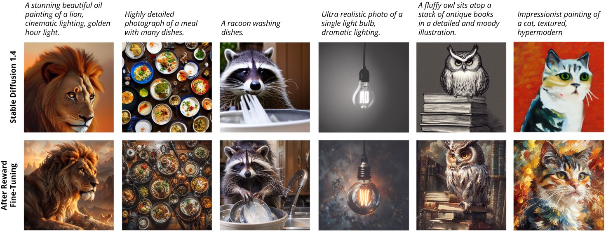
图 1：用人类偏好奖励模型做 DRaFT 微调后，生成的图像比 Stable Diffusion 基线更精致、更具风格化。更多样例见附录 E 图 37。
Diffusion models (Sohl-Dickstein et al., 2015; Song & Ermon, 2019; Ho et al., 2020; Song et al., 2021b; Kingma et al., 2021) have revolutionized generative modeling for continuous data, achieving impressive results across modalities including images, videos, and audio. However, for many use cases, modeling the training data distribution exactly (e.g. diverse images from the web) does not align with the model’s desired behavior (e.g. generating aesthetically pleasing images). To overcome this mismatch, text-to-image diffusion models commonly employ methods like classifier-free guidance (Ho & Salimans, 2021) to improve image-text alignment, and are fine-tuned on curated datasets such as LAION Aesthetics (Schuhmann & Beaumont, 2022) to improve image quality.
扩散模型（Sohl-Dickstein et al., 2015; Song & Ermon, 2019; Ho et al., 2020; Song et al., 2021b; Kingma et al., 2021）革新了连续数据的生成式建模，在图像、视频、音频等多种模态上取得了令人瞩目的成果。然而在许多应用场景中，精确拟合训练数据分布（例如网络上的多样图像）并不等同于模型期望的行为（例如生成具有美感的图像）。为弥合这一错位，文生图扩散模型通常采用无分类器引导（Ho & Salimans, 2021）来改善图文对齐，并在 LAION Aesthetics（Schuhmann & Beaumont, 2022）等精选数据集上微调以提升图像质量。
Within the language modeling community, aligning model behavior with human preferences is widely accomplished through fine-tuning with reinforcement learning (RL), such as with RL from human feedback (RLHF; Ziegler et al. 2019; Stiennon et al. 2020; Ouyang et al. 2022; Bai et al. 2022a). Inspired by RLHF, supervised and reinforcement learning methods have been developed to train diffusion models on human preference models or other rewards (Lee et al., 2023; Wu et al., 2023b; Dong et al., 2023; Black et al., 2023; Fan et al., 2023). While showing some success at improving text alignment or image aesthetics on narrow domains, these approaches are sample inefficient and have not been scaled up to the level of generally improving generation style across diverse prompts.
在语言建模领域，使模型行为契合人类偏好普遍通过强化学习（RL）微调实现，例如基于人类反馈的强化学习（RLHF；Ziegler et al. 2019; Stiennon et al. 2020; Ouyang et al. 2022; Bai et al. 2022a）。受 RLHF 启发，研究者提出了用有监督与强化学习方法在人类偏好模型或其他奖励上训练扩散模型（Lee et al., 2023; Wu et al., 2023b; Dong et al., 2023; Black et al., 2023; Fan et al., 2023）。这些方法在狭窄领域内改善文本对齐或图像美感方面有一定成效，但样本效率低下，也未能扩展到在多样化提示词上普遍改善生成风格的规模。
We propose a simple and efficient approach for gradient-based reward fine-tuning based on differentiating through the diffusion sampling process. We first introduce Direct Reward Fine-Tuning (DRaFT), a conceptually straightforward method that backpropagates the reward through the full sampling chain. To keep memory and compute costs low, we use gradient checkpointing (Chen et al., 2016) and optimize LoRA weights (Hu et al., 2022) rather than the full set of model parameters. Then, we introduce modifications to DRaFT that further improve its efficiency and performance. First, we propose DRaFT-, a variant that backpropagates through only the last steps of sampling to compute the gradient. We show empirically that full backpropagation can result in exploding gradients, and that using the truncated gradient performs substantially better given the same number of training steps. Then, we further improve efficiency by introducing DRaFT-LV, a variant of DRaFT-1 that computes lower-variance gradient estimates by averaging over multiple noise samples.
我们提出一种简洁高效的基于梯度的奖励微调方法，其思路是对扩散采样过程求导。首先介绍直接奖励微调（Direct Reward Fine-Tuning, DRaFT）——一种概念上直截了当的方法，它把奖励沿整条采样链反向传播。为控制显存与计算开销，我们采用梯度检查点（Chen et al., 2016），并优化 LoRA 权重（Hu et al., 2022）而非全部模型参数。随后我们对 DRaFT 加以改造，进一步提升其效率与效果：首先提出 DRaFT-，该变体只对采样的最后 步反向传播以求梯度。我们实证发现，完整反向传播会导致梯度爆炸，而在相同训练步数下使用截断梯度效果明显更好。接着我们引入 DRaFT-LV 进一步提升效率，它是 DRaFT-1 的变体，通过对多个噪声样本取平均来获得方差更低的梯度估计。
We apply DRaFT to Stable Diffusion 1.4 (Rombach et al., 2022) and evaluate it on a variety of reward functions and prompt sets. As our methods leverage gradients, they are substantially more efficient than RL-based fine-tuning baselines, for example maximizing scores from the LAION Aesthetics Classifier (Schuhmann & Beaumont, 2022) faster than the RL algorithms from Black et al. (2023). DRaFT-LV is particularly efficient, learning roughly faster than ReFL (Xu et al., 2023), a previous gradient-based fine-tuning method. We scale up DRaFT to train on hundreds of thousands of prompts and show that it improves Stable Diffusion on human preference rewards such as PickScore (Kirstain et al., 2023) and Human Preference Score v2 (Wu et al., 2023a). We further show that we can interpolate between the pre-trained and fine-tuned models by scaling the LoRA weights, and we can combine the effects of multiple rewards by linearly combining fine-tuned LoRA weights. Finally, we showcase how DRaFT can be applied to diverse reward functions including image compressibility and incompressibility, object detection and removal, and generating adversarial examples.
我们把 DRaFT 应用于 Stable Diffusion 1.4（Rombach et al., 2022），并在多种奖励函数与提示词集合上评测。由于利用了梯度，这些方法比基于 RL 的微调基线高效得多，例如在最大化 LAION Aesthetics Classifier（Schuhmann & Beaumont, 2022）得分时比 Black et al.（2023）的 RL 算法快 ；DRaFT-LV 尤其高效，比此前的梯度微调方法 ReFL（Xu et al., 2023）快约 。我们把 DRaFT 扩展到数十万条提示词的训练规模，证明它能提升 Stable Diffusion 在 PickScore（Kirstain et al., 2023）与 Human Preference Score v2（Wu et al., 2023a）等人类偏好奖励上的表现。我们还展示了通过对 LoRA 权重做缩放可在预训练模型与微调模型之间插值，并通过对微调后的 LoRA 权重做线性组合来叠加多种奖励的效果。最后，我们展示了 DRaFT 可应用于多种奖励函数，包括图像可压缩性与不可压缩性、目标检测与移除，以及生成对抗样本。
We provide an extended discussion of related work in Appendix D.
我们在附录 D 给出相关工作的扩展讨论。
Human preference learning trains models on judgements of which behaviors people prefer, rather than on human demonstrations directly (Knox & Stone, 2009; Akrour et al., 2011). This training is commonly done by learning a reward model reflecting human preferences and then learning a policy that maximizes the reward (Christiano et al., 2017; Ibarz et al., 2018). We apply DRaFT to optimize scores from existing preference models, such as PickScore (Kirstain et al., 2023) and Human Preference Score v2 (Wu et al., 2023a), which are trained on human judgements between pairs of images generated by diffusion models for the same prompt.
人类偏好学习以“人们更偏好哪种行为”的判断来训练模型，而不是直接在人类示范数据上训练（Knox & Stone, 2009; Akrour et al., 2011）。这类训练通常先学出一个反映人类偏好的奖励模型，再学一个最大化该奖励的策略（Christiano et al., 2017; Ibarz et al., 2018）。我们用 DRaFT 优化既有偏好模型的得分，例如 PickScore（Kirstain et al., 2023）与 Human Preference Score v2（Wu et al., 2023a），二者均基于人类对同一提示词下扩散模型生成的两张图像所做的判断训练而成。
Guidance (Song et al., 2021b; Dhariwal & Nichol, 2021) steers sampling towards images that satisfy a desired objective by adding an auxiliary term to the score function. Various pre-trained models can be used to provide guidance signals, including classifiers, facial recognition models, and object detectors (Bansal et al., 2023). Noisy examples obtained during sampling may be out-of-distribution for the guidance model. Two approaches to mitigate this are: (1) training the guidance model on noisy data (Dhariwal & Nichol, 2021) and (2) applying a guidance model to predicted clean images from one-step denoising (Li et al., 2022). However, (1) precludes the use of off-the-shelf pre-trained guidance functions and (2) applies guidance to out-of-distribution blurry images for high noise levels. DRaFT avoids these issues by only applying the reward function to the final generated image.
引导（Guidance）（Song et al., 2021b; Dhariwal & Nichol, 2021）通过在得分函数上附加一项辅助项，把采样导向满足期望目标的图像。各类预训练模型都可提供引导信号，包括分类器、人脸识别模型与目标检测器（Bansal et al., 2023）。采样过程中得到的含噪样本对引导模型而言可能属于分布外。缓解该问题有两种途径：（1）在含噪数据上训练引导模型（Dhariwal & Nichol, 2021）；（2）把引导模型作用于单步去噪预测的干净图像（Li et al., 2022）。但（1）排除了直接复用现成预训练引导函数的可能，（2）在高噪声水平下把引导施加于分布外的模糊图像。DRaFT 只把奖励函数作用于最终生成的图像，从而规避了这些问题。
Watson et al. (2022) differentiate through sampling to learn sampler hyperparameters (rather than model parameters) in order to reduce inference cost while maintaining perceptual image quality. Fan & Lee (2023) also propose an approach to speed up sampling: they consider doing this by backpropagating through diffusion sampling, but focus on an RL-based approach due to memory and exploding/vanishing gradient concerns. Both Fan & Lee (2023) and Watson et al. (2022) aim to improve sampling speed, rather than optimize arbitrary differentiable rewards, which is our focus. Like DRaFT, Direct Optimization of Diffusion Latents (DOODL; Wallace et al. 2023) backpropagates through sampling to optimize differentiable rewards; however DOODL optimizes the initial noise sample rather than the model parameters. While this does not require a training phase, it is much slower at inference time because the optimization must be redone for each prompt and metric. Outside of image generation, Wang et al. (2023a) train diffusion model policies for reinforcement learning by backpropagating through sampling.
Watson et al.（2022）通过对采样求导来学习采样器超参数（而非模型参数），以在保持感知图像质量的同时降低推理开销。Fan & Lee（2023）也提出了一种加速采样的方法：他们考虑过通过扩散采样反向传播来实现，但受制于显存与梯度爆炸／消失的顾虑，最终聚焦于基于 RL 的方案。Fan & Lee（2023）与 Watson et al.（2022）的目标都是提升采样速度，而非优化任意可微奖励——后者才是我们的关注点。与 DRaFT 类似，Direct Optimization of Diffusion Latents（DOODL; Wallace et al. 2023）也通过采样反向传播来优化可微奖励；不过 DOODL 优化的是初始噪声样本 而非模型参数。该方法虽无需训练阶段，但推理时慢得多，因为每条提示词与每个指标都要重新做一遍优化。在图像生成之外，Wang et al.（2023a）通过对采样反向传播来训练用于强化学习的扩散模型策略。
Lee et al. (2023) and Wu et al. (2023b) use supervised approaches to fine-tune diffusion models on rewards. These methods generate images with the pre-trained model and then fine-tune on the images while weighting examples according to the reward function or discarding low-reward examples. Unlike DRaFT or RL methods, the model is not trained online on examples generated by the current policy. However, Dong et al. (2023) use an online version of this approach where examples are re-generated over multiple rounds of training, which can be viewed as a simple kind of reinforcement learning.
Lee et al.（2023）与 Wu et al.（2023b）用有监督方式在奖励上微调扩散模型。这些方法先用预训练模型生成图像，再在这些图像上微调，并依奖励函数对样本加权或丢弃低奖励样本。与 DRaFT 或 RL 方法不同，模型并非在由当前策略生成的样本上在线训练。不过 Dong et al.（2023）使用了该方法的在线版本，在多轮训练中反复重新生成样本，可视为一种简单的强化学习。
Fan & Lee (2023) interpret the denoising process as a multi-step decision-making task and use policy gradient algorithms to fine-tune diffusion samplers. Building on it, Black et al. (2023) and Fan et al. (2023) use policy gradient algorithms to fine-tune diffusion models for arbitrary black-box objectives. Rather than optimizing model parameters, Hao et al. (2022) apply RL to improve the input prompts. RL approaches are flexible because they do not require differentiable rewards. However, in practice many reward functions are differentiable, or can be implemented or approximated in a differentiable way, and thus analytic gradients are often available. In such cases, using reinforcement learning discards useful information.
Fan & Lee（2023）把去噪过程解释为多步决策任务，并用策略梯度算法微调扩散采样器。在此基础上，Black et al.（2023）与 Fan et al.（2023）用策略梯度算法针对任意黑盒目标微调扩散模型。Hao et al.（2022）则把 RL 用于改进输入提示词，而非优化模型参数。RL 方法的优势在于无需奖励可微。但实际上许多奖励函数本身可微，或以可微方式实现、近似，解析梯度往往唾手可得。在这种情况下使用强化学习，等于丢弃了有用的信息。
ReFL (Xu et al., 2023) uses reward function gradients to fine-tune a diffusion model. It evaluates the reward on the one-step predicted clean image, from a randomly-chosen step along the denoising trajectory rather than on the final image, as DRaFT does. While ReFL performs similarly to DRaFT-1, DRaFT-LV is substantially more efficient, training approximately faster. We further discuss how ReFL relates to DRaFT in Section 4.
ReFL（Xu et al., 2023）利用奖励函数梯度微调扩散模型。它在去噪轨迹上随机选取某一步 所对应的一步预测干净图像 上评估奖励，而不是像 DRaFT 那样在最终图像上评估。ReFL 的表现与 DRaFT-1 相近，但 DRaFT-LV 效率明显更高，训练速度约快 。我们在第 4 节进一步讨论 ReFL 与 DRaFT 的关系。
Diffusion models are latent variable models based on the principle of iterative denoising: samples are generated starting from pure noise via a sequence of applications of a learned denoising function that gradually removes noise over timesteps. Diffusion models often learn the denoiser by minimizing the following re-weighted variational lower bound of the marginal likelihood (Ho et al., 2020):
扩散模型是基于迭代去噪原理的潜变量模型：样本从纯噪声 出发，通过反复施加学习得到的去噪函数 生成，该函数在 个时间步内逐步去除噪声。扩散模型通常通过最小化如下重加权后的边际似然变分下界来学习去噪器 （Ho et al., 2020）：
| (1) |
where is an increasing noise schedule.11 1 We use VDM notation (Kingma et al., 2021), where corresponds to in the Ho et al. (2020) notation. Here, is trained to predict the noise added to the clean datapoint . For image data, is typically parameterized by a UNet (Ronneberger et al., 2015). We use conditional diffusion models, which include a context such as a text prompt passed to the denoising function . For inference (i.e., sampling), one draws a noise sample , and then iteratively uses to estimate the noise and compute the next latent sample .
其中 是递增的噪声调度。11 1 我们采用 VDM 记号（Kingma et al., 2021），其中 对应于 Ho et al.（2020）记号中的 。此处 被训练来预测加到干净数据点 上的噪声 。对图像数据， 通常由 UNet 参数化（Ronneberger et al., 2015）。我们使用条件扩散模型，它把诸如文本提示词的上下文 传入去噪函数 。推理（即采样）时，先采样一个噪声样本 ，再迭代地用 估计噪声并计算下一个潜变量样本 。
Classifier-free guidance (CFG) uses a linear combination of the conditional and unconditional score estimates, denoising according to where is the guidance weight and indicates an empty conditioning signal. It requires that is replaced with part of the time during training so that the unconditional score function is learned.
无分类器引导（CFG）对条件与无条件得分估计做线性组合，按 去噪，其中 是引导权重， 表示空条件信号。它要求训练时以一定比例把 替换为 ，从而学会无条件得分函数。
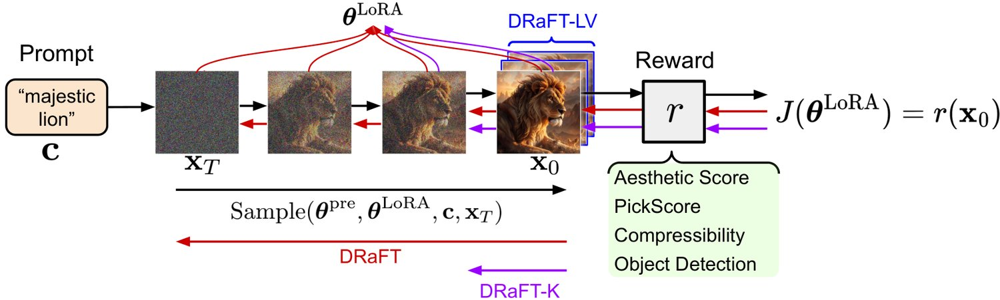
图 2：DRaFT 沿采样过程把奖励梯度反向传播到 LoRA 权重中。DRaFT- 截断反向过程，只对采样的最后 步求导。DRaFT-LV 通过在最后一步生成多个样本以降低方差，提升了 DRaFT-1 的效率。
We propose a simple approach for fine-tuning diffusion models for differentiable reward functions. Our goal is to fine-tune the parameters of a pre-trained diffusion model such that images generated by the sampling process maximize a differentiable reward function :
我们提出一种针对可微奖励函数微调扩散模型的简洁方法。目标是微调预训练扩散模型的参数 ，使采样过程生成的图像最大化可微奖励函数 ：
| (2) |
where denotes the sampling process from time with context .
其中 表示在上下文 下从时刻 开始的采样过程。
First, we consider solving Eq. 2 by computing and using gradient ascent. Computing this gradient requires backpropagation through multiple diffusion model calls in the sampling chain, similar to backpropagation through time in a recurrent neural network. We use two approaches to reduce the memory cost of DRaFT: 1) low-rank adaptation (LoRA) (Hu et al., 2022); and 2) gradient checkpointing (Chen et al., 2016).
首先，我们考虑通过计算 并用梯度上升来求解式 (2)。计算该梯度需要沿采样链中多次扩散模型调用反向传播，类似于循环神经网络中的随时间反向传播。我们用两种手段降低 DRaFT 的显存开销：1）低秩适配（LoRA）（Hu et al., 2022）；2）梯度检查点（Chen et al., 2016）。
Rather than fine-tuning the full set of model parameters, Low-Rank Adaptation (LoRA) (Hu et al., 2022) freezes the weights of the pre-trained model, and injects new low-rank weight matrices alongside the original model weights, whose contributions are summed to produce the adapted model outputs. Mathematically, for a layer with base parameters whose forward pass yields , the LoRA adapted layer is , where is a low-rank matrix. LoRA dramatically reduces the number of parameters that need to be optimized, which reduces the memory requirements of fine-tuning. Another benefit is that, because the information learned by the fine-tuned model is contained within the LoRA parameters, we can conveniently combine fine-tuned models by taking linear combinations of the LoRA parameters (Figure 5, right) and interpolate between the original and fine-tuned model by re-scaling the LoRA parameters (Figure 7).
低秩适配（LoRA）（Hu et al., 2022）不微调全部模型参数，而是冻结预训练模型的权重，并在原始模型权重旁注入新的低秩权重矩阵，两者贡献相加得到适配后的模型输出。形式化地说，对基础参数为 、前向传播为 的某一层，加入 LoRA 后的层为 ，其中 是低秩矩阵。LoRA 极大减少了需要优化的参数量，从而降低微调的显存需求。另一个好处是：由于微调模型学到的信息都包含在 LoRA 参数之内，我们可以方便地通过对 LoRA 参数做线性组合来合并多个微调模型（图 5 右），并通过对 LoRA 参数重新缩放来在原始模型与微调模型之间插值（图 7）。
算法 1 DRaFT（采用 DDIM 采样）
Gradient checkpointing (Gruslys et al., 2016; Chen et al., 2016) reduces the memory cost of storing activations for use during backprop at the cost of increased compute, by storing only a subset of activations in memory and re-computing the others on the fly. Specifically, we only store the input latent for each denoising step, and re-materialize the UNet activations during backprop. Implementing checkpointing in JAX (Bradbury et al., 2018) is as simple as adding @jax.checkpoint to the body of the sampling loop.
梯度检查点（Gruslys et al., 2016; Chen et al., 2016）以计算量换取显存：只在内存中保存部分激活值，其余在需要时重新计算，从而降低为反向传播保存激活值的显存开销。具体地，我们只保存每个去噪步的输入潜变量，并在反向传播时重新生成 UNet 激活值。在 JAX（Bradbury et al., 2018）中实现检查点很简单，只需在采样循环体上加 @jax.checkpoint。
While gradient checkpointing makes it possible to backpropagate through the full sampling chain, we found that optimization speed and overall performance can be substantially improved by truncating backprop through only the last sampling steps. We call the resulting approach DRaFT-, illustrated in Figure 2. Truncating backprop reduces the compute needed per step by decreasing the number of backward passes through the UNet. Surprisingly, it also improves training efficiency per-step, which we investigate further in Section 5.2. For small (e.g., ), the memory cost of unrolling is small, and we do not need gradient checkpointing.
梯度检查点使贯穿完整采样链的反向传播成为可能，但我们发现，只把反向传播截断到最后 个采样步，可大幅提升优化速度与整体效果。我们把由此得到的方法称为 DRaFT-，如图 2 所示。截断反向传播减少了通过 UNet 的反向次数，因而降低了每步所需的计算量。出人意料的是，它还提升了每步的训练效率，我们在 5.2 节对此做进一步分析。当 较小时（例如 ），展开的显存开销很小，无需使用梯度检查点。
Empirically, we found that simply setting (i.e., only differentiating through the last sampling step) results in the best reward vs. compute tradeoff. Here, we propose a method for improving the efficiency of DRaFT-1 further by reducing the variance of the gradient estimate. We call this low-variance estimator DRaFT-LV. The key idea is to use the forward diffusion process to produce additional examples to train on without re-generating new images. Specifically, we noise the generated image times, and use the summed reward gradient over these examples. Although DRaFT-LV adds additional forward and backward passes through the UNet and reward model, in practice this is fairly little overhead compared to the UNet calls already needed for sampling. We found that using is around more efficient than DRaFT-1 while adding around 10% compute overhead for our reward functions.
实验表明，直接取 （即只对最后一个采样步求导）在奖励与计算的权衡上最优。这里我们提出一种通过降低梯度估计方差来进一步提升 DRaFT-1 效率的方法，称之为低方差估计器 DRaFT-LV。核心思路是借助前向扩散过程产生额外的训练样本，而无需重新生成新图像。具体地，我们对生成的图像加噪 次，并把这些样本上的奖励梯度求和。尽管 DRaFT-LV 增加了 次通过 UNet 与奖励模型的额外前向与反向传播，但与采样本身所需的 次 UNet 调用相比，这部分开销在实践中相当小。我们发现，使用 比 DRaFT-1 高效约 ，而对我们的奖励函数只增加约 10% 的计算开销。
Algorithm 1 presents a unified framework encompassing several gradient-based approaches for diffusion fine-tuning. In particular, it includes as special cases DRaFT, DRaFT-, DRaFT-LV, and ReFL (Xu et al., 2023), which differ in how the gradient is computed. DRaFT- inserts a stop-gradient operation at sampling iteration , to ensure that the gradient is only computed through the last steps (as the gradient does not flow through stop_grad); vanilla DRaFT can be obtained by setting . ReFL inserts a stop gradient and breaks out of the sampling loop early, returning a one-step predicted clean image. Additionally, it does so at a random timestep towards the end of sampling (we use for 50-step sampling). In this unifying framework, ReFL with is equivalent to DRaFT-. Lastly, DRaFT-LV averages the last-step gradient over multiple examples with different noises to reduce variance. Note that in practice we use Adam and LoRA, not shown in the algorithm for simplicity.
算法 1 给出了一个统一框架，涵盖了多种基于梯度的扩散微调方法。特别地，DRaFT、DRaFT-、DRaFT-LV 与 ReFL（Xu et al., 2023）都是它的特例，区别在于梯度的计算方式。DRaFT- 在采样迭代 处插入停止梯度操作 ，以保证梯度只经最后 步计算（因为梯度无法穿过 stop_grad）；令 即可得到原版 DRaFT。ReFL 则插入停止梯度并提前跳出采样循环，返回一步预测的干净图像，而且它是在采样末端附近随机选取的时间步上这样做的（50 步采样时我们用 ）。在这一统一框架下，取 的 ReFL 等价于 DRaFT-。最后，DRaFT-LV 对多个施加不同噪声的样本的最后一步梯度取平均以降低方差。注意实践中我们使用 Adam 与 LoRA，为简洁起见未在算法中列出。
In this section, we show that DRaFT can be applied to a wide range of reward functions, and that it substantially outperforms prior reward fine-tuning methods. We used Stable Diffusion 1.4 as the base diffusion model. As it is a latent diffusion model (Rombach et al., 2022), applying DRaFT involves backpropagating through both the sampling process that produces the final latent representation and the decoder used to obtain the image. DRaFT is applicable to any differentiable sampler; in our experiments, we used DDIM (Song et al., 2021a), but we found that ancestral sampling performs similarly. We used 50 sampling steps, so DRaFT-50 corresponds to backpropagating through the full sampling chain (i.e., vanilla DRaFT). We used classifier-free guidance weight 7.5. Experimental details, hyperparameters, and additional results are provided in Appendices A and B.
本节表明 DRaFT 可适用于广泛的奖励函数，并显著优于此前的奖励微调方法。我们使用 Stable Diffusion 1.4 作为基座扩散模型。由于它是潜变量扩散模型（Rombach et al., 2022），应用 DRaFT 需要同时贯穿生成最终潜变量表示的采样过程和用于得到图像的解码器做反向传播。DRaFT 适用于任何可微采样器；实验中我们使用 DDIM（Song et al., 2021a），但发现祖先采样表现相近。我们采用 50 步采样，因此 DRaFT-50 对应于贯穿完整采样链的反向传播（即原版 DRaFT），无分类器引导权重取 7.5。实验细节、超参数与补充结果见附录 A 与 B。
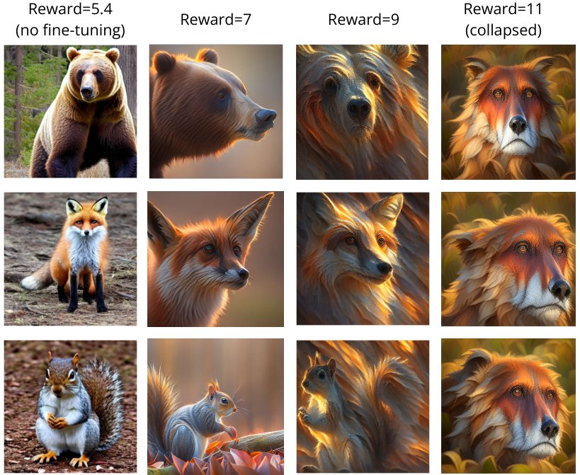
图 3：左——各方法在最大化 LAION Aesthetic Classifier 得分时的样本效率。DDPO（Black et al., 2023）的结果来自与作者的通信，因为原论文的结果使用了有缺陷的实现；DDPO 在 5 万次奖励查询后达到 7.4 的奖励值。右——训练过程中生成结果的定性对比。
First, we compared fine-tuning methods to improve aesthetic quality scores given by the LAION aesthetic predictor, which is trained to rate images on a scale of 1 through 10. We used the simple set of 45 prompts from Black et al. (2023), where each prompt is the name of a common animal. We compared against the DDPO (Black et al., 2023) RL method, ReFL (Xu et al., 2023), and a prompt engineering baseline (see Appendix A.3 for more details). Results are shown in Figure 3. Because it does not make use of gradients, reinforcement learning is much less sample-efficient than DRaFT. Interestingly, truncating DRaFT to a single backwards step substantially improves sample efficiency; we analyze this phenomenon further in Section 5.2. Thanks to its lower-variance gradient estimate, DRaFT-LV further improves training efficiency. We observed that the methods initially produced improved images, but eventually collapsed to producing very similar high-reward images.
首先，我们在 LAION 美学预测器给出的美学质量得分上比较各类微调方法，该预测器按 1 到 10 的标度为图像打分。我们使用 Black et al.（2023）中由 45 条提示词组成的简单集合，每条提示词都是一种常见动物的名称。对比对象包括 DDPO（Black et al., 2023）这一 RL 方法、ReFL（Xu et al., 2023），以及一个提示词工程基线（详见附录 A.3），结果见图 3。由于强化学习不利用梯度，其样本效率远低于 DRaFT。有意思的是，把 DRaFT 截断为单步反向传播显著提升了样本效率，我们在 5.2 节进一步分析这一现象。得益于方差更低的梯度估计，DRaFT-LV 进一步改善了训练效率。我们观察到，这些方法初期生成的图像确有改善，但最终会坍缩为高度相似的高奖励图像。
In Figure 3 (Right), we observe an instance of reward hacking, where the fine-tuned model loses diversity and collapses to generate a certain high-reward image. Reward hacking points to deficiencies in existing rewards; efficiently finding gaps between the desired behavior and the behavior implicitly captured by the reward is a crucial step in fixing the reward. Improved techniques for fine-tuning, such as DRaFT, can aid the development of new rewards. We discuss reward hacking further in Appendix B.8.
在图 3（右）中我们观察到一个奖励破解实例：微调后的模型丧失多样性，坍缩为生成某一类高奖励图像。奖励破解暴露了现有奖励的缺陷；高效地找出期望行为与奖励所隐含行为之间的落差，是修正奖励的关键一步。DRaFT 这类更优的微调技术有助于新奖励的开发。我们在附录 B.8 进一步讨论奖励破解。
图 4：各类基线（灰色柱）、ReFL、DRaFT- 与 DRaFT-LV 在 HPDv2 测试集上取得的 HPSv2 奖励对比。除 DOODL 与 best of 16 外，所有基线取自 Wu et al.（2023a）。除特别说明外，模型均为微调 1 万步的 Stable Diffusion 1.4。
Next, we applied DRaFT to two reward functions trained on human preference data: Human Preference Score v2 (HPSv2; Wu et al. 2023a) and PickScore (Beaumont et al., 2022).
接下来，我们把 DRaFT 应用于两个在人类偏好数据上训练的奖励函数：Human Preference Score v2（HPSv2; Wu et al. 2023a）与 PickScore（Beaumont et al., 2022）。
First, we trained DRaFT models using the aesthetic, PickScore, and HPSv2 rewards on the same set of 45 animal prompts. As the reward models behave differently for photographs and paintings, we trained two versions of each model. Qualitatively, we found that the different reward functions led to quite different generated images (see Figure 5, Left). HPSv2 generally encourages more colorful but less photorealistic generations.
首先，我们在同一组 45 条动物提示词上分别用美学、PickScore 与 HPSv2 奖励训练 DRaFT 模型。由于奖励模型对照片与绘画的行为不同，我们为每个模型训练了两个版本。定性来看，不同奖励函数导致的生成图像差异相当明显（见图 5 左）。HPSv2 总体上鼓励色彩更鲜艳但真实感更弱的生成结果。
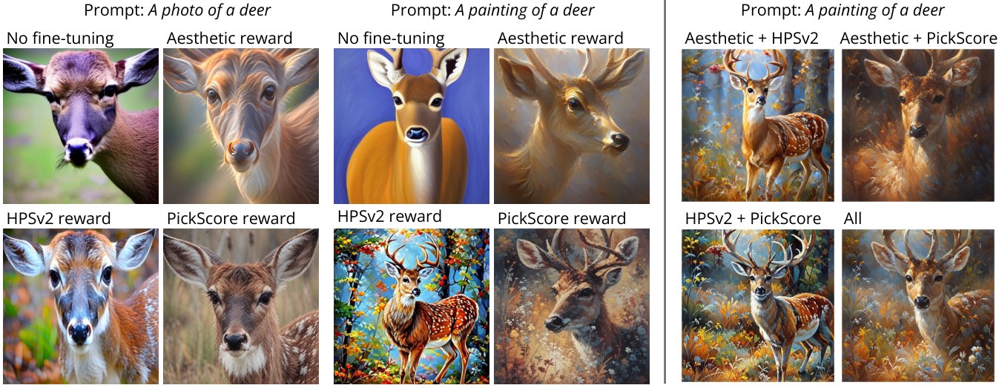
图 5：左——在相同随机种子下，分别用 LAION Aesthetic Classifier、Human Preference Score v2 与 PickScore 奖励微调的 DRaFT 模型所生成图像的对比。右——通过混合不同奖励函数对应的 LoRA 权重来合并 DRaFT 模型的输出。
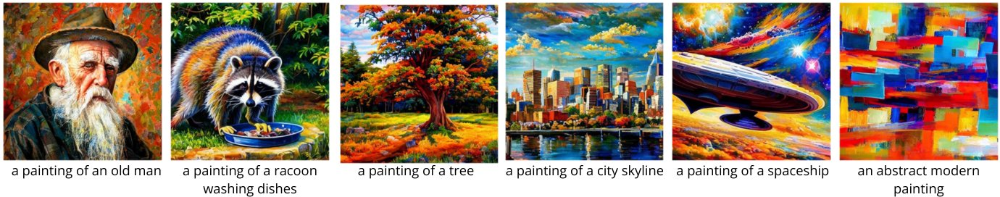
图 6：一个仅在 45 条动物提示词这一简单集合上训练的 DRaFT 模型，能很好地泛化到其他图像主题，同时保持所学风格（奖励为 Human Preference Score v2）。
Next, we compared DRaFT-finetuned models to several baselines on the Human Preference Score v2 benchmark (Wu et al., 2023a). We used DRaFT to fine-tune for HPSv2, using the Human Preference Dataset v2 (HPDv2) training set prompts. In Figure 4, we report the mean performance over the four test set categories; Table 2 in Appendix B.2 provides a detailed breakdown of results by category. We compared DRaFT to a selected set of baselines from Wu et al. (2023a), as well as to DOODL (Wallace et al., 2023) and ReFL (Xu et al., 2023). As ReFL does not use guidance during training, we also experimented with adding guidance to it. Interestingly, the model with guidance performs similarly; possibly fine-tuning compensates for the lack of guidance similarly to how guided diffusion models can be distilled into unguided ones (Meng et al., 2023). DRaFT-1 slightly outperforms ReFL, while being simpler to implement. DRaFT-LV achieves the best reward value, learning approximately faster than DRaFT-1 (see the “DRaFT-LV, 5k steps” bar). Figure 4 also provides an ablation comparing DRaFT- for . We found that using smaller was beneficial, both in terms of training time and final performance.
接着，我们在 Human Preference Score v2 基准（Wu et al., 2023a）上把 DRaFT 微调模型与若干基线作比较。我们用 DRaFT 针对 HPSv2 微调，使用 Human Preference Dataset v2（HPDv2）训练集提示词。图 4 报告了四个测试集类别上的平均表现，附录 B.2 的表 2 给出了按类别细分的结果。我们把 DRaFT 与选自 Wu et al.（2023a）的一组基线以及 DOODL（Wallace et al., 2023）和 ReFL（Xu et al., 2023）作比较。由于 ReFL 在训练时不使用引导，我们也试验了为它加入引导；有意思的是，加入引导的模型表现相近，可能是因为微调弥补了缺少引导的影响，正如带引导的扩散模型可被蒸馏为无引导模型那样（Meng et al., 2023）。DRaFT-1 略优于 ReFL，且实现更简单；DRaFT-LV 取得最优奖励值，学习速度比 DRaFT-1 快约 （见“DRaFT-LV, 5k steps”柱）。图 4 还给出了对 下 DRaFT- 的消融。我们发现取更小的 在训练时间与最终效果两方面都更有利。
Next, we investigated several types of generalization: 1) prompt generalization, where we fine-tuned for HPSv2 on one prompt dataset (Pick-a-Pic) and evaluated performance on another prompt dataset (HPDv2)—these results are shown by the “DRaFT, Pick-a-Pic” bars in Figure 4; and 2) reward generalization, where we fine-tuned using a different reward (PickScore) than we used for evaluation (HPSv2)—these results are shown by the “DRaFT, PickScore” bars. DRaFT-1 and DRaFT-LV transfer well across prompt sets and fairly well across reward functions. We also show qualitative prompt generalization results in Figure 6: we found that a model fine-tuned using only 45 animal prompts learns a style that generalizes well to other prompts.
接着我们考察了两类泛化：1）提示词泛化，即在一个提示词数据集（Pick-a-Pic）上针对 HPSv2 微调，在另一个提示词数据集（HPDv2）上评测——对应图 4 中的“DRaFT, Pick-a-Pic”柱；2）奖励泛化，即用与评测所用不同的奖励（PickScore）微调、再用 HPSv2 评测——对应“DRaFT, PickScore”柱。DRaFT-1 与 DRaFT-LV 在提示词集合间迁移良好，在奖励函数间迁移也尚可。图 6 给出了提示词泛化的定性结果：我们发现仅用 45 条动物提示词微调的模型学到了能很好泛化到其他提示词的风格。
We pushed the scale of DRaFT-LV further by performing a longer training run on the larger HPDv2 dataset, optimizing for a weighted combination of rewards, .22 2 The gradients of the different rewards have substantially different norms, leading to the wide range of coefficients. The particular values were chosen based on sample quality after experimenting with a few settings. Images generated by the model are shown in Figure 1. Overall, the fine-tuned model produces more detailed and stylized images than baseline Stable Diffusion. In some cases, fine-tuning improves the model’s image-text alignment as well as aesthetics, because the PickScore and HPSv2 rewards measure the similarity between the prompt and image embeddings. For example, the fine-tuned model almost always generates images faithful to the prompt “a raccoon washing dishes,” while baseline Stable Diffusion does so less than half the time. However, we also found that the model sometimes overgeneralizes the reward function, generating detailed images even when the prompt calls for a simpler style (see Figure B.1 in Appendix B).
我们进一步把 DRaFT-LV 的规模推高：在更大的 HPDv2 数据集上做 更长的训练，优化一个加权组合奖励 。22 2 不同奖励的梯度范数差异很大，因此系数跨度很宽；具体数值是在试过若干设置后依样本质量选定的。该模型生成的图像见图 1。总体而言，微调后的模型比 Stable Diffusion 基线生成更精致、更具风格化的图像。在某些情况下，微调还同时改善了模型的图文对齐与美感，因为 PickScore 与 HPSv2 奖励度量的是提示词与图像嵌入之间的相似度。例如对提示词“一只浣熊在洗碗”，微调后的模型几乎总能生成忠于提示词的图像，而 Stable Diffusion 基线的成功率不到一半。不过我们也发现，模型有时会过度泛化奖励函数，即便提示词要求更简洁的风格，仍生成细节繁复的图像（见附录 B 图 B.1）。
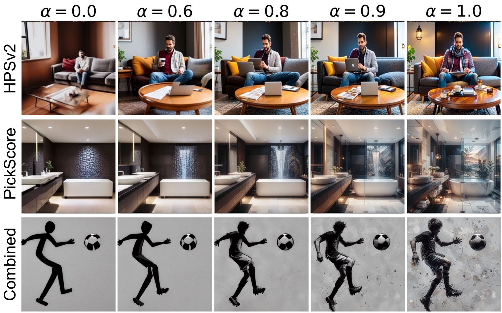
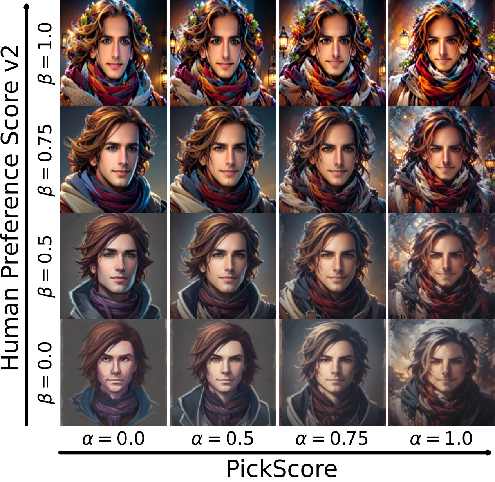
图 7：LoRA 参数插值。左——对 LoRA 权重施加不同标量倍率时 DRaFT 模型的生成结果；缩放 LoRA 参数可在预训练模型与微调模型之间产生语义上的平滑插值。右——把分别针对 PickScore 与 HPSv2 两种奖励独立微调的 LoRA 参数合并，无需额外训练即可对风格做细粒度控制。对固定噪声样本，我们展示用 生成的图像。
It is possible to control the strength of the fine-tuning simply by scaling the LoRA parameters: multiplying them by a scalar moves the adapted parameters closer to the original, pre-trained model. Figure 7 (Left) shows that this method smoothly interpolates between the pre-trained and DRaFT models. The LoRA scale could become a useful hyperparameter for controlling generations from DRaFT models similarly to how guidance strength is currently used. While we experimented with KL regularization and early stopping as alternative ways of reducing reward overfitting (see Figure 29 in Appendix B.8), we found LoRA scaling to work best.
只需缩放 LoRA 参数就能控制微调强度：把它们乘以标量 ，即可让适配后的参数向原始预训练模型靠近。图 7（左）显示该方法能在预训练模型与 DRaFT 模型之间平滑插值。LoRA 缩放有望成为控制 DRaFT 模型生成结果的有用超参数，其地位类似当前的引导强度。我们也尝试了 KL 正则化与早停作为缓解奖励过拟合的替代手段（见附录 B.8 图 29），但发现 LoRA 缩放效果最好。
We also probed the compositional properties of LoRA weights adapted for different rewards. One can combine the effects of multiple reward functions by interpolating the LoRA weights of the respective DRaFT models (Figure 5, Right). In Figure 7 (Right), we show images generated using linear combinations of LoRA parameters trained separately for the PickScore and HPSv2 rewards, using scaling coefficients and . The resulting images mix the semantics of HPSv2 and PickScore, and are simultaneously more saturated and detailed than the pre-trained model outputs. While it would also be possible to instead directly sum the score functions of the models (similar to Liu et al. 2022), this would increase generation time proportionally to the number of combined models.
我们还考察了针对不同奖励适配的 LoRA 权重的组合性质：通过对各 DRaFT 模型的 LoRA 权重插值，可以叠加多个奖励函数的效果（图 5 右）。图 7（右）展示了用缩放系数 与 对分别为 PickScore 和 HPSv2 奖励单独训练的 LoRA 参数做线性组合后生成的图像。所得图像融合了 HPSv2 与 PickScore 的语义，同时比预训练模型的输出更饱和、更精细。当然也可以直接把各模型的得分函数相加（类似 Liu et al. 2022），但那样生成时间会随合并模型数量成比例增加。
图 8：梯度范数
Interestingly, we found that truncated backpropagation improves sample efficiency as well as compute efficiency. Our analysis suggests that gradients explode as increases, which may lead to optimization difficulties for large (see Figure 8). We found that gradient clipping somewhat alleviates this issue (see Figure 28 in Appendix B.7), but does not fully close the gap. In Figure 10, we show an ablation over for aesthetic fine-tuning: performance degrades as increases for . In Figure 10, we show that although DRaFT-1 only computes gradients through the final generation step, it generalizes across time and affects the whole sampling chain. We compare samples generated with different LoRA start iterations , where we applied the LoRA-adapted diffusion parameters for the last steps of the sampling chain, while in the first steps we used the pre-trained Stable Diffusion parameters without LoRA adaptation. We observe that adaptation does not happen only at the end of sampling (also see Figure 26 in App. B.7). We also investigated the opposite scenario, where the LoRA-adapted parameters are used in the first steps, after which LoRA is “turned off” and we use only the original pre-trained parameters for the remaining steps (see Figure 27 App. B.7), which shows that it is also important to apply the LoRA parameters early in sampling.
有意思的是，我们发现截断反向传播同时提升了样本效率与计算效率。分析表明，梯度会随 增大而爆炸，这可能给大的 带来优化困难（见图 8）。我们发现梯度裁剪在一定程度上缓解了该问题（见附录 B.7 图 28），但未能完全填补差距。图 10 给出了美学微调下对 的消融：当 在 范围内增大时，性能会下降。图 10 还表明，尽管 DRaFT-1 只对最后一步求导，它的影响会跨时间泛化并作用于整条采样链。我们比较了采用不同 LoRA 起始迭代 生成的样本：在采样链最后 步使用 LoRA 适配后的扩散参数，而前 步使用未经 LoRA 适配的预训练 Stable Diffusion 参数。我们观察到适配并非只发生在采样末端（另见附录 B.7 图 26）。我们也考察了相反的情形：在前 步使用 LoRA 适配参数，随后“关闭”LoRA、在剩余 步只用原始预训练参数（见附录 B.7 图 27），结果表明在采样早期施加 LoRA 参数同样重要。
图 9：美学奖励微调下对 的消融。
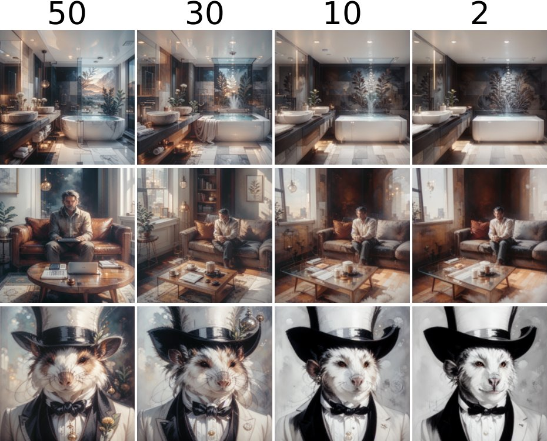
图 10：采用不同 LoRA 起始步 生成的图像。
图 11：上——面向 JPEG 可压缩性微调的扩散模型生成的图像，奖励为 ，其中 。下——对可压缩性损失取负，得到难以压缩的图像。
Inspired by Black et al. (2023), we also fine-tuned a diffusion model to generate easily-compressible images. While the JPEG compression and decompression algorithms available in common libraries are not differentiable by default, they can be implemented in a differentiable manner using deep learning libraries like PyTorch (Paszke et al., 2019) or JAX (Bradbury et al., 2018). Given a prompt , we pass the output of the diffusion model, through differentiable compression and decompression algorithms to obtain , and minimize the Euclidean distance between the original and reconstructed images. This encourages the diffusion model to produce simple images. The results using DRaFT to fine-tune for JPEG compressibility are shown in Figure 11 (Top): these images have simple, uniform-color backgrounds and low-frequency foregrounds. In addition, negating the compressibility loss yields incompressible images, shown in Figure 11 (Bottom), that have complex, high-frequency foregrounds and backgrounds. Additional details are provided in Appendix B.3.
受 Black et al.（2023）启发，我们也微调扩散模型使其生成易于压缩的图像。常见库中的 JPEG 压缩与解压算法默认不可微，但可以用 PyTorch（Paszke et al., 2019）或 JAX（Bradbury et al., 2018）等深度学习库以可微方式实现。给定提示词 ，我们把扩散模型的输出 送入可微的压缩与解压算法得到 ，并最小化原始图像与重建图像之间的欧氏距离。这会促使扩散模型生成简单图像。图 11（上）给出了用 DRaFT 面向 JPEG 可压缩性微调的结果：这些图像背景简单、色彩均匀，前景为低频内容。此外，对可压缩性损失取负可得到不可压缩的图像，如图 11（下）所示，其前景与背景都复杂且高频。更多细节见附录 B.3。
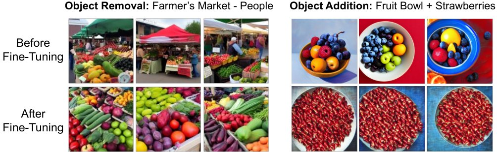
图 12：用 OWL-ViT 目标检测器做目标移除或添加的微调。左——扩散模型的提示词为 farmers market，OWL-ViT 的查询为 ；微调前，多数生成图像的背景中有人，微调后所有图像只含蔬菜。右——在水果碗中加入草莓。
Here, we explore the use of a pre-trained object detection model to bias a diffusion model’s generations to include or exclude a certain object class. We use OWL-ViT (Minderer et al., 2022), an open-world localization model that takes arbitrary text queries and returns bounding boxes with scores for the corresponding objects in the image. We pass images generated by the diffusion model through a pre-trained OWL-ViT model, together with a set of queries that we wish to exclude from the generated images (see Figure 22 in Appendix B.6 for details). As the reward, we use the sum of scores for the localized objects corresponding to all queries , as well as the areas of their bounding boxes. In Figure 12 (Left), we show the results of fine-tuning to minimize detection of people. Similarly, we can maximize the sum of scores for localized objects to encourage generations to include a certain class: in Figure 12 (Right), we use the prompt “a bowl of fruit” and queries .
这里我们探索用预训练目标检测模型来引导扩散模型的生成结果包含或排除某一物体类别。我们使用 OWL-ViT（Minderer et al., 2022）——一种开放世界定位模型，它接受任意文本查询，返回图像中对应物体的边界框与得分。我们把扩散模型生成的图像连同希望从图像中排除的一组查询 一起送入预训练的 OWL-ViT 模型（详见附录 B.6 图 22）。奖励取所有查询 对应已定位物体的得分之和，以及其边界框面积。图 12（左）给出了为最小化“人”的检测而微调的结果。类似地，最大化已定位物体得分之和可促使生成结果包含某一类别：图 12（右）中我们使用提示词“a bowl of fruit”与查询 。
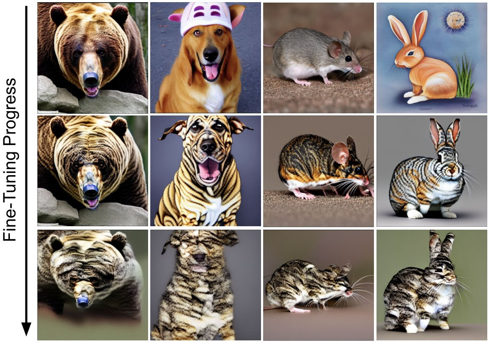
图 13：针对提示词 bear、dog、mouse、目标类别为 cat 的扩散对抗样本。
Our framework also provides an avenue to study the inductive biases of both diffusion models and pre-trained classifiers: we can fine-tune a diffusion model such that images generated based on a prompt for a class (e.g., “mouse”) are classified as a different class (e.g., “cat”) by a ResNet-50 pretrained on ImageNet. As the fine-tuning reward, we use the negative cross-entropy to the target class. From the qualitative results shown in Figure 13, we observe that this classifier is texture-biased (Geirhos et al., 2019), as the images generated by the fine-tuned model incorporate cat-like textures while keeping the animal shapes mostly unchanged.
我们的框架也为研究扩散模型与预训练分类器的归纳偏置提供了途径：我们可以微调扩散模型，使基于某类别 （例如“mouse”）提示词生成的图像被在 ImageNet 上预训练的 ResNet-50 判为另一类别 （例如“cat”）。微调奖励取对目标类别的负交叉熵。从图 13 的定性结果可以看出，该分类器具有纹理偏置（Geirhos et al., 2019）：微调后模型生成的图像融入了猫一般的纹理，而动物形状基本保持不变。
We introduced an efficient framework for fine-tuning diffusion models on differentiable rewards by leveraging reward gradients. Our first method, Direct Reward Fine-Tuning (DRaFT), backpropagates through the full sampling procedure, and achieves strong performance on a variety of reward functions. We then propose DRaFT- and DRaFT-LV, variants which improve efficiency via truncated backpropagation through time. In addition, we draw connections between our approach and prior work such as ReFL (Xu et al., 2023), to provide a unifying perspective on the design space of gradient-based reward fine-tuning algorithms. We show that various methods can be obtained as special cases of a more general algorithm, depending on the whether—and where—stop_gradient operations are included. We hope that our work will inspire the development of improved techniques for reward fine-tuning; just as RLHF has become crucial for deploying large language models, we believe that reward fine-tuning may become a key step for improving image generation models.
我们提出了一个高效的框架，利用奖励梯度在可微奖励上微调扩散模型。我们的第一个方法——直接奖励微调（DRaFT）——贯穿完整采样过程反向传播，在多种奖励函数上取得强劲表现。随后提出 DRaFT- 与 DRaFT-LV 两个变体，通过随时间截断反向传播提升效率。此外，我们把本方法与 ReFL（Xu et al., 2023）等既有工作联系起来，为基于梯度的奖励微调算法的设计空间提供了统一视角。我们表明，根据是否引入 stop_gradient 操作以及引入的位置，各类方法都可作为某个更通用算法的特例得到。我们希望本工作能启发更优奖励微调技术的发展；正如 RLHF 已成为部署大语言模型的关键环节，我们相信奖励微调也将成为改进图像生成模型的关键一步。
We thank Daniel Watson, Jason Baldridge, Hartwig Adam, Robert Geirhos, and the anonymous reviewers for their thoughtful comments and suggestions. We thank Xiaoshi Wu for help with the HPSv2 dataset, Jiazheng Xu for answering our questions about ReFL, and Kevin Black for answering our questions about DDPO and re-running their aesthetic reward experiments.
感谢 Daniel Watson、Jason Baldridge、Hartwig Adam、Robert Geirhos 以及匿名审稿人提出的悉心意见与建议。感谢 Xiaoshi Wu 在 HPSv2 数据集上的协助、Jiazheng Xu 解答我们关于 ReFL 的疑问，以及 Kevin Black 解答我们关于 DDPO 的疑问并重新运行了他们的美学奖励实验。
This appendix is structured as follows:
本附录结构如下：
In Appendix A, we provide more details of our experimental setup, including hyperparameters and baselines.
• 附录 A 给出实验设置的更多细节，包括超参数与基线。
In Appendix B, we provide additional results and analysis.
• 附录 B 给出补充结果与分析。
In Appendix C, we discuss two other methods we explored that did not achieve as strong results as DRaFT-LV: a single-reward version of DRaFT-LV and applying Deterministic Policy Gradient.
• 附录 C 讨论我们探索过的另外两种方法——DRaFT-LV 的单奖励版本，以及应用确定性策略梯度——它们的效果都不及 DRaFT-LV。
In Appendix D, we provide an extended discussion of related work.
• 附录 D 给出相关工作的扩展讨论。
In Appendix E, we provide uncurated samples from models fine-tuned for various reward functions, including HPSv2, PickScore, and a combined reward weighting HPSv2, PickScore, and Aesthetic score.
• 附录 E 给出针对各种奖励函数（包括 HPSv2、PickScore，以及加权组合 HPSv2、PickScore 与美学得分的组合奖励）微调模型的未筛选样本。
Here we expand on training details and provide hyperparameters. We used the same hyperparameters for ReFL and our DRaFT variants.
此处展开说明训练细节并给出超参数。我们对 ReFL 与我们的 DRaFT 各变体使用了相同的超参数。
We use the AdamW optimizer (Loshchilov & Hutter, 2019) with , , and a weight decay of 0.1. As we use LoRA, the weight decay regularizes fine-tuning by pushing parameters towards the pre-trained weights. For the longer training runs (10k steps on human preference reward functions), we use a square root learning rate decay, scaling the learning rate by . Weight decay and learning rate decay slightly improve results, but are not critical to the method. During training, we convert the pre-trained Stable Diffusion parameters to bfloat16 to reduce the memory footprint, but use float32 for the LoRA parameters being trained.
我们使用 AdamW 优化器（Loshchilov & Hutter, 2019），参数为 、，权重衰减 0.1。由于使用 LoRA，权重衰减通过把参数推向预训练权重来实现对微调的正则化。对较长的训练（在人类偏好奖励函数上训练 1 万步），我们采用平方根学习率衰减，按 缩放学习率。权重衰减与学习率衰减会略微改善结果，但对方法本身并非关键。训练时我们把预训练 Stable Diffusion 参数转为 bfloat16 以降低显存占用，但对被训练的 LoRA 参数使用 float32。
We apply LoRA to the feedforward layers as well as the cross-attention layers in the UNet, which we found to produce slightly better results. We apply LoRA only to the UNet parameters, not to the CLIP text encoder or VAE decoder mapping latents to images, as these did not improve results in initial experiments.
我们对 UNet 中的前馈层与交叉注意力层都施加 LoRA，发现这样效果略好。我们只对 UNet 参数施加 LoRA，而不对 CLIP 文本编码器或把潜变量映射为图像的 VAE 解码器施加，因为初步实验中这些并未带来改善。
We use 50 steps of DDIM sampling (where no noise is added during sampling beyond the initial sampled noise). We found the results using ancestral/DDPM sampling to be similar. We employ classifier-free guidance with a guidance weight of 7.5 both at train-time and test-time.
我们使用 50 步 DDIM 采样（除初始采样噪声外，采样过程中不再加入噪声）。我们发现使用祖先／DDPM 采样的结果相近。训练与测试时都采用无分类器引导，引导权重为 7.5。
We apply DRaFT in two settings: large-scale (human preference reward functions using the HPSv2 or PickScore prompt sets) and small-scale (the other experiments). Hyperparameters are listed in Table 1. Small-scale training runs take around 1.5 hours on 4 TPUv4s. Large-scale training runs take around 8 hours on 16 TPUv4s.
我们在两种设置下应用 DRaFT：大规模（使用 HPSv2 或 PickScore 提示词集合的人类偏好奖励函数）与小规模（其余实验）。超参数列于表 1。小规模训练在 4 块 TPUv4 上约需 1.5 小时，大规模训练在 16 块 TPUv4 上约需 8 小时。
| Hyperparameter | Small-Scale Experiments | Large-scale Experiments |
| Learning rate | 4e-4 | 2e-4 |
| Batch size | 4 | 16 |
| Train steps | 2k | 10k |
| LoRA inner dimension | 8 | 32 |
| Weight decay | 0.1 | 0.1 |
| DDIM steps | 50 | 50 |
| Guidance weight | 7.5 | 7.5 |
| DRaFT-LV inner loops | 2 | 2 |
| ReFL max timestep | 20 | 20 |
表 1：训练超参数。
The LAION aesthetic predictor is trained to rate images on a scale of 1 through 10. The predictor consists of a feedforward neural network on top of a CLIP (Radford et al., 2021) image encoder pre-trained on a variety of human-labeled sources.
LAION 美学预测器按 1 到 10 的标度为图像打分。该预测器由一个前馈神经网络构成，构建在 CLIP（Radford et al., 2021）图像编码器之上，后者在多种人工标注来源上预训练。
Human Preference Score v2 (HPSv2; Wu et al. 2023a) is trained on prompts from DiffusionDB (Wang et al., 2023b) and COCO Captions (Chen et al., 2015). Images are generated from each using a wide range of generative models. Human annotators then rate which of two images is preferred for a prompt. The reward model is OpenCLIP-H (Beaumont et al., 2022) fine-tuned on the preference judgements. Unlike the aesthetic reward, HPSv2 takes into account the prompt as well as the image.
Human Preference Score v2（HPSv2; Wu et al. 2023a）在 DiffusionDB（Wang et al., 2023b）与 COCO Captions（Chen et al., 2015）的提示词上训练。每个提示词都用大量生成模型生成图像，随后由人类标注者评判同一提示词下两张图像中更偏好哪一张。奖励模型是在这些偏好判断上微调的 OpenCLIP-H（Beaumont et al., 2022）。与美学奖励不同，HPSv2 同时考虑提示词与图像。
PickScore (Kirstain et al., 2023) also uses OpenCLIP-H fine-tuned on preference data. However, the data is collected in a more organic way through a web app, where users can generate and then rate pairs of images generated from different diffusion models with different sampler hyperparameters.
PickScore（Kirstain et al., 2023）同样使用在偏好数据上微调的 OpenCLIP-H。但其数据是通过一个网页应用以更自然的方式采集的：用户可以生成图像，并对来自不同扩散模型、不同采样器超参数的两张图像做出评价。
Denoising Diffusion Policy Optimization (DDPO; Black et al. 2023) essentially applies the REINFORCE policy gradient algorithm (Williams, 1992) to diffusion model generation. The method trains the model to increase the likelihoods of actions (i.e. sampling steps) that produce high-reward samples. DDPO employs additional tricks such as importance weight clipping, reward normalization, and classifier-free guidance-aware training to improve results. We show results from DDPO-IS, which extends DDPO to use an importance sampling estimator for learning on examples generated from a stale policy, enabling multiple optimization updates per reward query. Empirically, DDPO was found to outperform previous supervised approaches like reward weighted regression (Lee et al., 2023). Rather than using the results in Figure 4 of the original paper, we obtained results from direct correspondence with the authors, as their original aesthetic reward implementation had a bug.33 3 See https://github.com/kvablack/ddpo-pytorch/issues/3#issuecomment-1634723127
去噪扩散策略优化（DDPO; Black et al. 2023）本质上是把 REINFORCE 策略梯度算法（Williams, 1992）应用到扩散模型生成上。该方法训练模型以提高产生高奖励样本的“动作”（即采样步）的概率。DDPO 还采用了重要性权重裁剪、奖励归一化、以及感知无分类器引导的训练等技巧来改善结果。我们给出的是 DDPO-IS 的结果，它把 DDPO 扩展为使用重要性采样估计器，从而可在来自陈旧策略的样本上学习，实现每次奖励查询执行多轮优化更新。实验上 DDPO 被发现优于奖励加权回归（Lee et al., 2023）等此前的有监督方法。我们没有采用原论文图 4 的结果，而是通过与作者直接通信获得，因为他们原始的美学奖励实现存在缺陷。33 3 见 https://github.com/kvablack/ddpo-pytorch/issues/3#issuecomment-1634723127
Users often improve the aesthetic quality of generated images through prompt engineering. We perform semi-automated prompt search with access to the reward function, trying out various prompts and selecting the one with the best aesthetic score. The best-scoring prompt we found is A stunning beautiful oil painting of a {:}, cinematic lighting, golden hour light.
用户常通过提示词工程来提升生成图像的美学质量。我们在可访问奖励函数的前提下做半自动提示词搜索，尝试各种提示词并选取得分最高的那个。我们找到的最佳提示词是 A stunning beautiful oil painting of a {:}, cinematic lighting, golden hour light。
This simple baseline generates 16 images for each caption with the pre-trained Stable Diffusion model and selects the one with the highest reward.
这个简单基线用预训练 Stable Diffusion 模型为每条描述生成 16 张图像，并选取奖励最高的一张。
DOODL (Wallace et al., 2023) backpropagates through diffusion sampling to update the initial noise so that the resulting generation produces a high reward. Rather than using an invertible diffusion algorithm to reduce memory costs as in Wallace et al. (2023), we simply use gradient checkpointing as with DRaFT. We optimize with Adam (which worked slightly better for us than momentum only) over 20 steps, which makes generation approximately slower than standard sampling. Following Wallace et al. (2023), we renormalize the latent at every step after the Adam update.
DOODL（Wallace et al., 2023）通过扩散采样反向传播来更新初始噪声 ，使生成结果获得高奖励。我们没有像 Wallace et al.（2023）那样用可逆扩散算法来降低显存开销，而是像 DRaFT 一样简单地使用梯度检查点。我们用 Adam 对 优化 20 步（对我们而言比仅用动量略好），这使得生成比标准采样慢约 。依照 Wallace et al.（2023），我们在每次 Adam 更新后对潜变量重新归一化。
Here we show examples of over-generalization, where fine-tuning on preferences trains the model to generate detailed images, even when the prompt asks for a simple drawing.
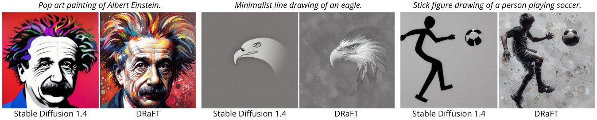
这里给出过度泛化的示例：在偏好上微调后，模型被训练成即便提示词要求简笔画，也会生成细节繁复的图像。
In Table 2, we provide quantitative results comparing DRaFT to several baselines on the Human Preference Score v2 benchmark from Wu et al. (2023a).
表 2 给出了在 Wu et al.（2023a）的 Human Preference Score v2 基准上，DRaFT 与若干基线的定量比较结果。
| Model | Animation | Concept Art | Painting | Photo | Averaged |
| GLIDE 1.4 | |||||
| VQGAN + CLIP | |||||
| DALL-E 2 | |||||
| SD 2.0 | |||||
| DeepFloyd-XL | |||||
| SDXL Base 0.9 | |||||
| Dreamlike Photoreal 2.0 | |||||
| Stable Diffusion (SD 1.4) | |||||
| ReFL | |||||
| DRaFT-50 | |||||
| DRaFT-30 | |||||
| DRaFT-10 | |||||
| DRaFT-5 | |||||
| DRaFT-1 | |||||
| DRaFT-1, PickScore | |||||
| DRaFT-1, Pick-a-Pic | |||||
| DRaFT-LV | |||||
| DRaFT-LV, PickScore | |||||
| DRaFT-LV, Pick-a-Pic |
表 2：依照 Wu et al.（2023a），我们使用 HPDv2 训练集微调模型，并在四个基准数据集——Animation、Concept Art、Paintings 与 Photos——上评测。我们报告各基准的平均得分，以及在全部数据集上的汇总表现。分隔线以上的结果取自 Wu et al.（2023a），以下的结果来自我们自己的实现与实验。
Figure 14 illustrates the setup we used to fine-tune for JPEG compressibility and incompressibility. Given a prompt , we take the image generated by the diffusion model, and pass it through JPEG compression and decompression functions, denoted by and , respectively. As the reward, we use the negative Euclidean distance between the original sample and its reconstruction . While the JPEG implementations found in common libraries are not directly differentiable, the JPEG algorithm can be re-implemented in a differentiable way using autodiff frameworks; we re-implemented JPEG compression and decompression in JAX (Bradbury et al., 2018). Figures 15 and 16 show additional samples generated by diffusion models fine-tuned for compressibility and incompressibility, respectively, and Figure 17 shows the results of overoptimization for incompressibility. In our experiments, we used a fixed compression ratio of .
图 14 展示了我们面向 JPEG 可压缩性与不可压缩性做微调的设置。给定提示词 ，我们取扩散模型生成的图像 ，把它送入 JPEG 压缩与解压函数（分别记为 与 ）。奖励取原始样本 与其重建结果 之间欧氏距离的负值。常见库中的 JPEG 实现虽不可直接求导，但 JPEG 算法可以用自动微分框架以可微方式重新实现；我们在 JAX（Bradbury et al., 2018）中重新实现了 JPEG 压缩与解压。图 15 与图 16 分别给出面向可压缩性与不可压缩性微调的扩散模型生成的补充样本，图 17 给出不可压缩性过度优化的结果。实验中我们使用固定的压缩比 。
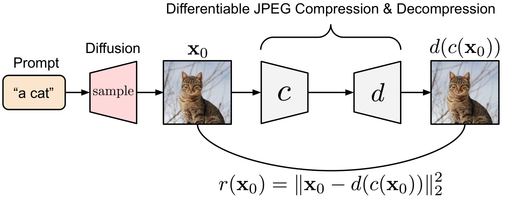
图 14：使用可微 JPEG 压缩与解压算法面向 JPEG 可压缩性做微调。
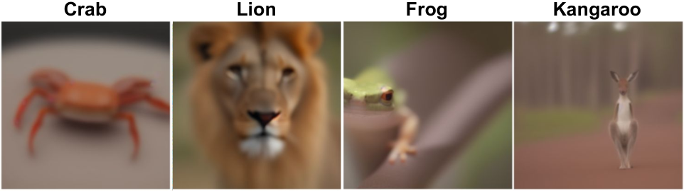
图 15：面向 JPEG 可压缩性微调的扩散模型生成的图像。
图 16：用 JPEG 可压缩性奖励的负值微调的扩散模型生成的图像，得到难以压缩的结果。我们观察到高频的前景与背景信息。
图 17：对 JPEG 不可压缩性的过度优化会产生高频纹理强烈、语义信息丢失的图像。有意思的是，这里的章鱼被生成出了八条以上的触手。
The setup for our diffusion adversarial example experiments is illustrated in Figure 18. We used a ResNet-50 model pre-trained on ImageNet-1k to classify images generated by Stable Diffusion; as the reward for fine-tuning, we used the negative cross-entropy to a fixed target class.
图 18 展示了我们扩散对抗样本实验的设置。我们用在 ImageNet-1k 上预训练的 ResNet-50 对 Stable Diffusion 生成的图像做分类；微调奖励取对固定目标类别的负交叉熵。
图 18：生成“扩散对抗样本”——以文本提示词（如“mouse”）为条件，却必须被预训练 ImageNet 分类器判为另一类别（如“cat”）。
Here, we provide additional results for scaling and interpolating LoRA parameters. Figures 19 and 20 show the effect of scaling LoRA parameters to control the strength of reward adaptation for the Human Preference Score v2 and PickScore rewards, respectively, and Figure 21 shows additional interpolations using linear combinations of LoRA weights trained separately for each of these rewards.
这里给出 LoRA 参数缩放与插值的补充结果。图 19 与图 20 分别展示了缩放 LoRA 参数以控制 Human Preference Score v2 与 PickScore 奖励适配强度的效果，图 21 给出对这两个奖励分别训练的 LoRA 权重做线性组合的更多插值结果。
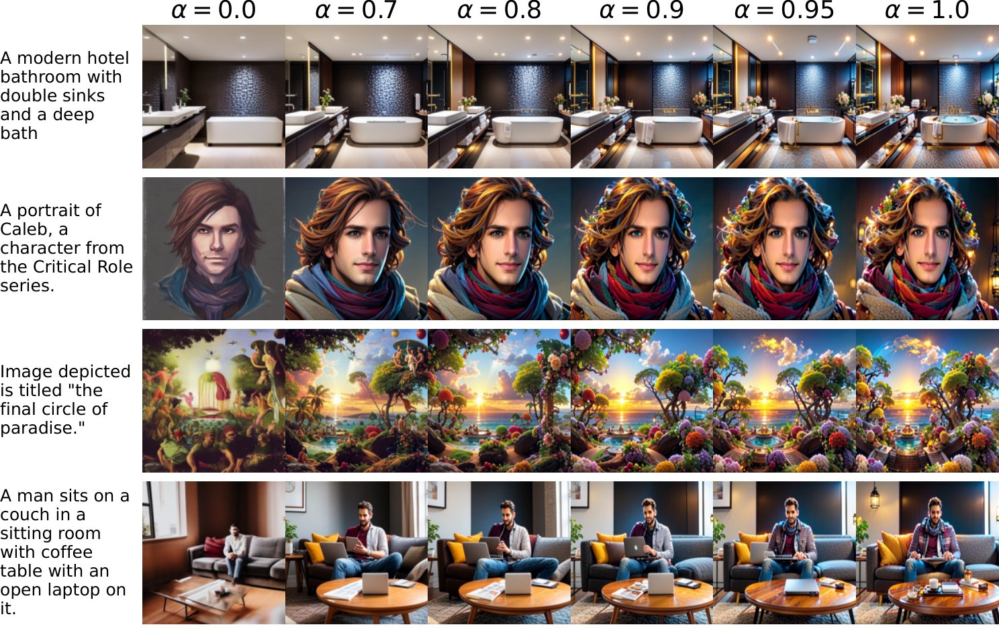
图 19：缩放 LoRA 参数（此处针对 Human Preference Score v2（Wu et al., 2023a）适配）可在原始 Stable Diffusion 模型与微调模型之间产生语义上的平滑插值。
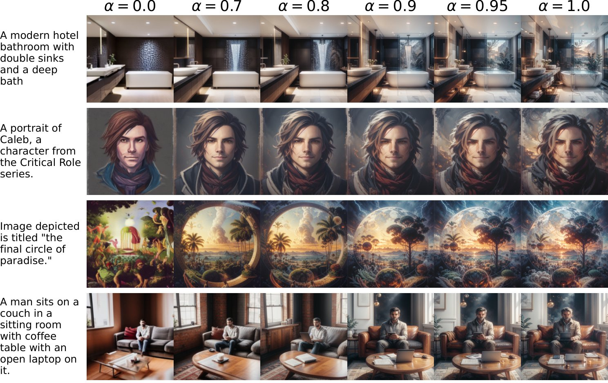
图 20：缩放 LoRA 参数（此处针对 PickScore（Kirstain et al., 2023）适配）可在原始 Stable Diffusion 模型与微调模型之间产生语义上的平滑插值。
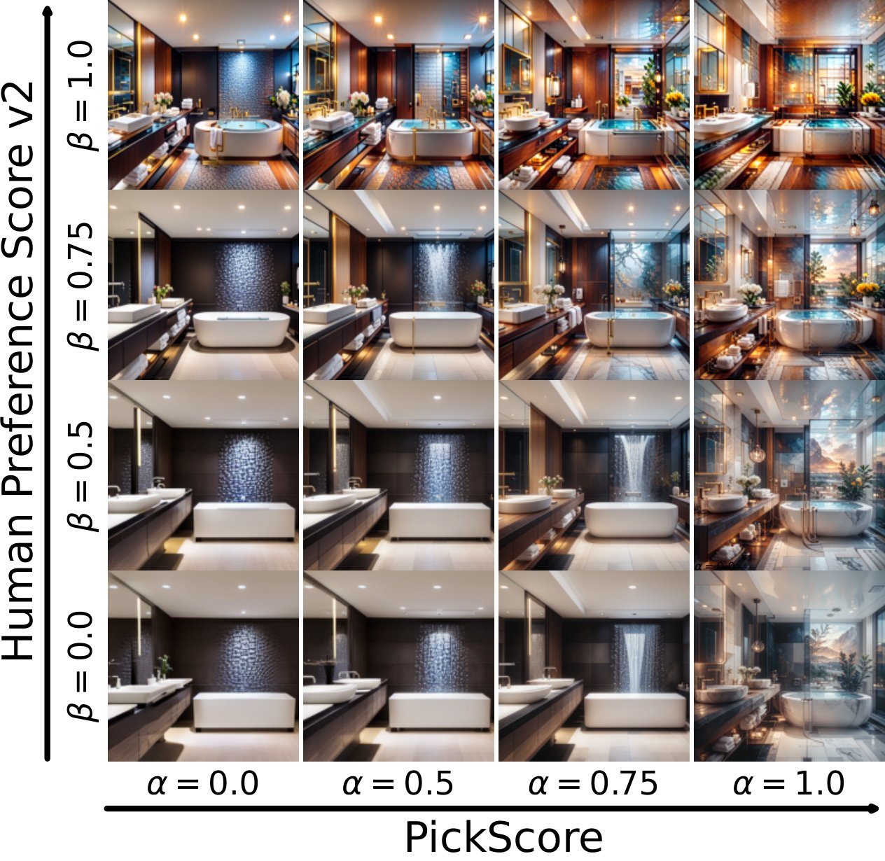
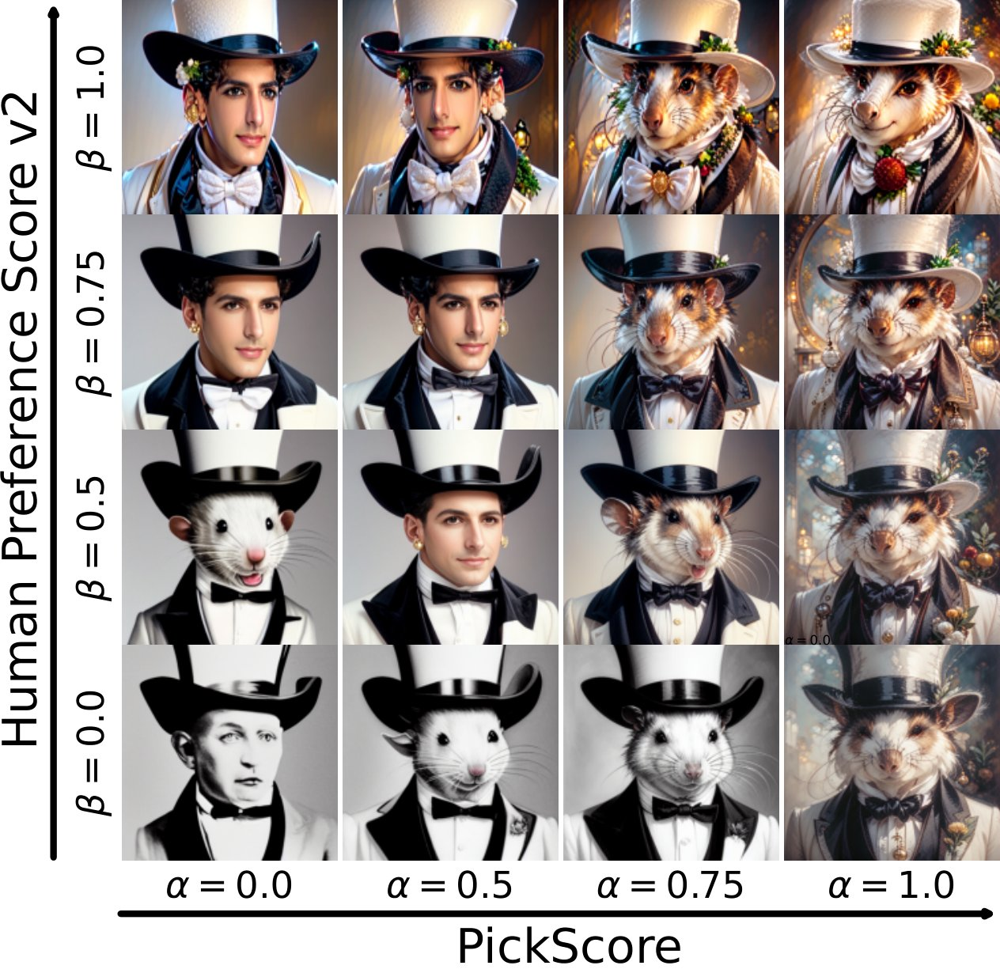
图 21：对针对不同奖励适配的 LoRA 参数做线性组合的补充结果。每个子图中，我们展示用系数 下的 LoRA 参数 生成的图像。我们发现对 LoRA 权重做插值可在不同风格之间产生平滑过渡。
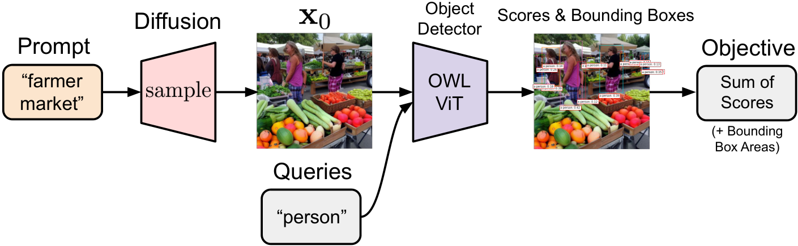
图 22：用预训练 OWL-ViT 模型（Minderer et al., 2022）做目标检测微调。
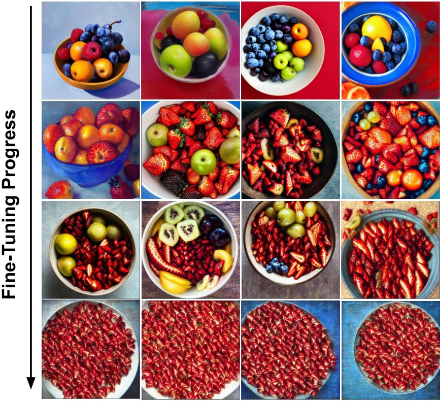
图 23：最大化查询“strawberry”的目标检测器得分，会得到在微调过程中草莓逐渐增多的水果碗。
Our setup for object detection is illustrated in Figure 22. We feed the generated images into a pre-trained Open-World Localization Vision Transformer (OWL-ViT) (Minderer et al., 2022) model, along with a list of text queries that we wish to localize in the image. OWL-ViT outputs bounding boxes and scores for the localized objects; we experimented with reward functions based on the sum of scores, as well as based on the areas of the bounding boxes, and found that both worked well. Figure 23 shows the fine-tuning progress for the diffusion prompt “a bowl of fruit” with OWL-ViT query “strawberries.”
图 22 展示了我们的目标检测设置。我们把生成的图像连同希望在图像中定位的一组文本查询一起送入预训练的开放世界定位视觉 Transformer（OWL-ViT）（Minderer et al., 2022）模型。OWL-ViT 输出已定位物体的边界框与得分；我们试验了基于得分之和以及基于边界框面积的两种奖励函数，发现二者效果都不错。图 23 展示了在扩散提示词“a bowl of fruit”、OWL-ViT 查询“strawberries”下的微调过程。
We investigated the impact of on the behavior of models fine-tuned with DRaFT- via ablations designed to answer the following questions: 1) Does adaptation occur only in the last steps (e.g., does the initial segment of the sampling chain behave similarly to the original pre-trained model, with a sudden jump occurring at the end)? and 2) Is it necessary to apply the LoRA parameters throughout the full sampling chain? What is the impact of applying the LoRA parameters to only the initial or final portions of the trajectory?
我们通过消融实验考察 对用 DRaFT- 微调模型行为的影响，试图回答以下问题：1）适配是否只发生在最后 步（即采样链的初始段是否与原始预训练模型行为相近，而在末端出现突变）？2）是否有必要在整条采样链上施加 LoRA 参数？只把 LoRA 参数施加于轨迹的初始段或末段会有怎样的影响？
图 24：采用不同 LoRA 起始步与结束步采样的示意。
图 25：DRaFT-1 梯度与 下 DRaFT- 梯度之间的夹角。
To answer these questions, we applied the LoRA-adapted diffusion parameters for the last steps of the sampling chain, while in the first steps we used the pre-trained Stable Diffusion parameters without LoRA adaptation (see Figure 24). Figure 26 compares samples generated with different LoRA start iterations ; interestingly, although the LoRA parameters are fine-tuned using truncated backpropagation through only the last steps of sampling, adaptation does not happen only in the last steps; rather, the LoRA parameters need to be applied for at least 10-20 steps to yield substantial changes in the generated images. Similarly, we also investigated the opposite scenario, where the LoRA-adapted parameters are only applied in the first steps of the sampling chain, after which LoRA is “turned off” and we use only the original pre-trained parameters for the remaining steps. The generated images for a range of end LoRA steps are shown in Figure 27. These results further demonstrate the importance of applying LoRA parameters in the early part of the sampling chain.
为回答这些问题，我们把 LoRA 适配后的扩散参数用于采样链的最后 步，而前 步使用未经 LoRA 适配的预训练 Stable Diffusion 参数（见图 24）。图 26 比较了采用不同 LoRA 起始迭代 生成的样本；有意思的是，尽管 LoRA 参数只通过对采样最后 步的截断反向传播微调而来，适配并非只发生在最后 步，而是需要施加至少 10–20 步才能给生成图像带来实质性变化。类似地，我们也考察了相反的情形：只在采样链的前 步施加 LoRA 适配参数，随后“关闭”LoRA、在剩余 步只使用原始预训练参数。图 27 给出了一系列 LoRA 结束步 下的生成图像。这些结果进一步说明在采样链早期施加 LoRA 参数的重要性。
In Figure 25, we show the angle between the DRaFT-1 gradient and DRaFT- gradients for various ; the gradients become nearly orthogonal for .
图 25 给出了不同 下 DRaFT-1 梯度与 DRaFT- 梯度之间的夹角；当 时，这些梯度近乎正交。
图 26：采用不同 LoRA 起始步生成的图像。这里扩散采样链的前 步使用预训练扩散模型参数，最后 步使用 LoRA 适配参数。LoRA 起始步 自上而下增大，。我们观察到，尽管 LoRA 参数是通过对采样最后几步的截断反向传播训练得到的，它们却影响整条采样链——当 LoRA 适配参数被使用很多步时（例如 ），图像质量会有明显提升。
图 27：采用不同 LoRA 结束步生成的图像。这里扩散采样链的前 步使用 LoRA 适配的扩散参数，最后 步使用未经适配的预训练模型参数。LoRA 结束步 自上而下增大，。有意思的是，我们观察到在采样早期施加 LoRA 参数是有益的。
We used gradient clipping throughout all of our experiments. In Figure 28, we show an ablation over the gradient clipping norm hyperparameter, which we denote . We compared the reward values achieved over the course of fine-tuning for PickScore on the HPD-v2 prompt dataset, with gradient clipping norms . We found that, when using DRaFT-50, smaller gradient clipping norms () improved optimization substantially, while large clipping norms () impeded training. This further supports the observation that backpropagating through long diffusion sampling chains can lead to exploding gradients. We performed a similar ablation for DRaFT-1, and found that the fine-tuning performance was nearly identical for all gradient clipping coefficients ( to ).
我们在全部实验中都使用了梯度裁剪。图 28 给出了对梯度裁剪范数超参数（记作 ）的消融。我们比较了在 HPD-v2 提示词数据集上针对 PickScore 微调过程中取得的奖励值，梯度裁剪范数取 。我们发现，使用 DRaFT-50 时，较小的梯度裁剪范数（）大幅改善了优化，而过大的裁剪范数（）则妨碍训练。这进一步支持了“沿长扩散采样链反向传播会导致梯度爆炸”的观察。我们对 DRaFT-1 做了类似消融，发现所有梯度裁剪系数（ 到 ）下的微调表现几乎一致。
图 28：用 DRaFT- 在 HPDv2 提示词数据集上微调以最大化 PickScore 时，对梯度裁剪范数 的消融。红色为 DRaFT-50 实验，绿色为 DRaFT-1 实验。两种情况下，颜色越深表示梯度裁剪范数越小。
DRaFT can cause models to overfit to the reward function, leading to high-reward but subjectively lower-quality images. Here, we explore regularization methods to reduce reward overfitting.
DRaFT 可能导致模型对奖励函数过拟合，产生高奖励但主观质量更差的图像。这里我们探索缓解奖励过拟合的正则化方法。
As an approximate quantitative measure for over-optimization, we trained models on one reward function (HPSv2) and evaluated their generalization to another reward (PickScore). We considered three strategies to mitigate reward overfitting:
作为过度优化的近似定量度量，我们在一个奖励函数（HPSv2）上训练模型，并评估其向另一个奖励（PickScore）的泛化。我们考虑了三种缓解奖励过拟合的策略：
LoRA Scaling: multiplying the LoRA weights by a constant (see Section 5.2), which interpolates between the pre-trained model and fine-tuned model, similarly to Wortsman et al. (2022).
• LoRA 缩放：把 LoRA 权重乘以常数 （见 5.2 节），在预训练模型与微调模型之间插值，类似于 Wortsman et al.（2022）。
Early Stopping: evaluating various checkpoints across the training run instead of only the last one; early ones will achieve lower train reward but hopefully generalize better.
• 早停：评估训练过程中不同检查点而不仅是最后一个；较早的检查点训练奖励较低，但有望泛化得更好。
KL Regularization: similarly to Fan et al. (2023), we add a loss term to the model that penalizes the KL divergence between the pre-trained and fine-tuned model distributions. This amounts to a squared error term between the fine-tuned and pre-trained predicted , that is, , where is the KL regularization coefficient. We computed the KL term using the predicted in the last denoising step. We trained several separate models, each with a different weight on the KL loss, which is a disadvantage over the previous methods that can be applied to a single training run.
• KL 正则化：类似 Fan et al.（2023），我们给模型加入一项损失，惩罚预训练模型与微调模型分布之间的 KL 散度。这相当于对微调与预训练预测的 取平方误差项，即 ，其中 是 KL 正则化系数。我们用最后一个去噪步预测的 来计算 KL 项。我们训练了若干独立模型，每个对 KL 损失取不同权重，这是相较前两种方法的一个劣势——后两者可在单次训练中应用。
All models used DRaFT-LV with the large-scale hyperparameters (see Table 1). The results are shown in Figure 29. Both early stopping and KL regularization are commonly used to reduce reward overfitting in large language model preference tuning, but we found LoRA scaling to be more effective than the other approaches.
所有模型都使用 DRaFT-LV 与大规模超参数（见表 1），结果见图 29。早停与 KL 正则化都是大语言模型偏好调优中缓解奖励过拟合的常用手段，但我们发现 LoRA 缩放比其他方法更有效。
图 29：为防止奖励过拟合所采用的各种正则化方法下，从 HPSv2 到 PickScore 的泛化表现。
A common result of reward hacking is a collapse to a single, high-reward image. Here, we describe two of our attempts to address this lack of diversity. First, we tried adding dropout to the reward function (in this case, the aesthetic classifier); however, we found that even large dropout rates such as 0.95 led to diversity collapse, as shown in Figure 30 (Left). Next, we tried adding a term to the reward that measures the dissimilarity between images generated in the same minibatch—this encourages the model to generate different images for different prompts and noise samples. Ideally, one would take the mean dissimilarity over all pairs of examples in a minibatch, yielding combinations where is the minibatch size. However, for computational tractability, we used a simpler approach, where we formed pairs by reversing the elements of a minibatch and computing elementwise dissimilarities, giving us pairs. We tried two measures of dissimilarity: 1) the Euclidean distance, and 2) the Learned Perceptual Image Patch Similarity (LPIPS) (Zhang et al., 2018). Neither was satisfactory to increase diversity: in Figure 30 (Right), we show images generated using a large weight on the LPIPS diversity term, which increased inner-batch diversity at the expense of the aesthetic score.
奖励破解的一个常见后果是坍缩为单张高奖励图像。这里介绍我们针对多样性缺失所做的两次尝试。首先，我们尝试给奖励函数（此处为美学分类器）加入 dropout；然而我们发现，即便 dropout 率高达 0.95，仍会出现多样性坍缩，如图 30（左）所示。其次，我们尝试在奖励中加入一项度量同一小批量内生成图像之间差异性的项——这鼓励模型对不同的提示词与噪声样本生成不同的图像。理想情况下应对小批量内所有样本对的平均差异性取均值，得到 种组合，其中 是小批量大小。但为便于计算，我们采用了更简单的方法：把小批量元素逆序后配对，逐元素计算差异性，得到 对。我们试了两种差异性度量：1）欧氏距离；2）学习感知图像块相似度（LPIPS）（Zhang et al., 2018）。两者都未能令人满意地提升多样性：图 30（右）给出了对 LPIPS 多样性项取较大权重时生成的图像，它提升了批内多样性，代价是美学得分下降。
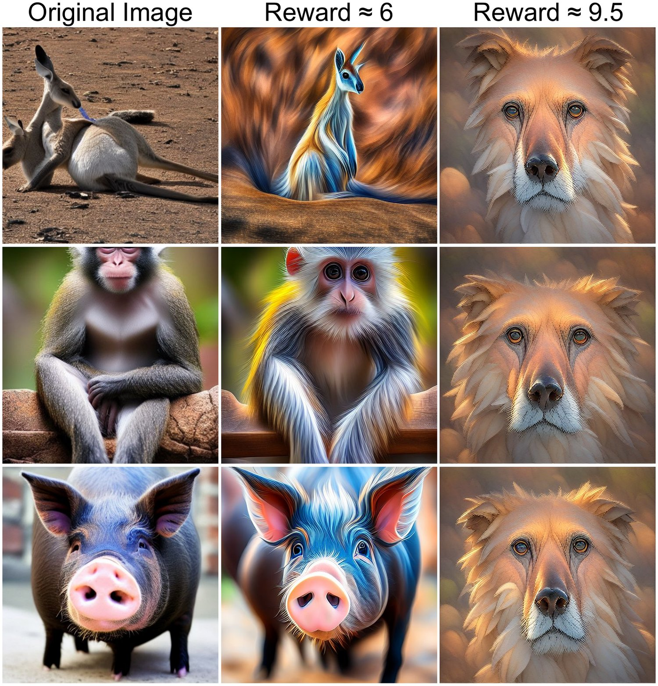
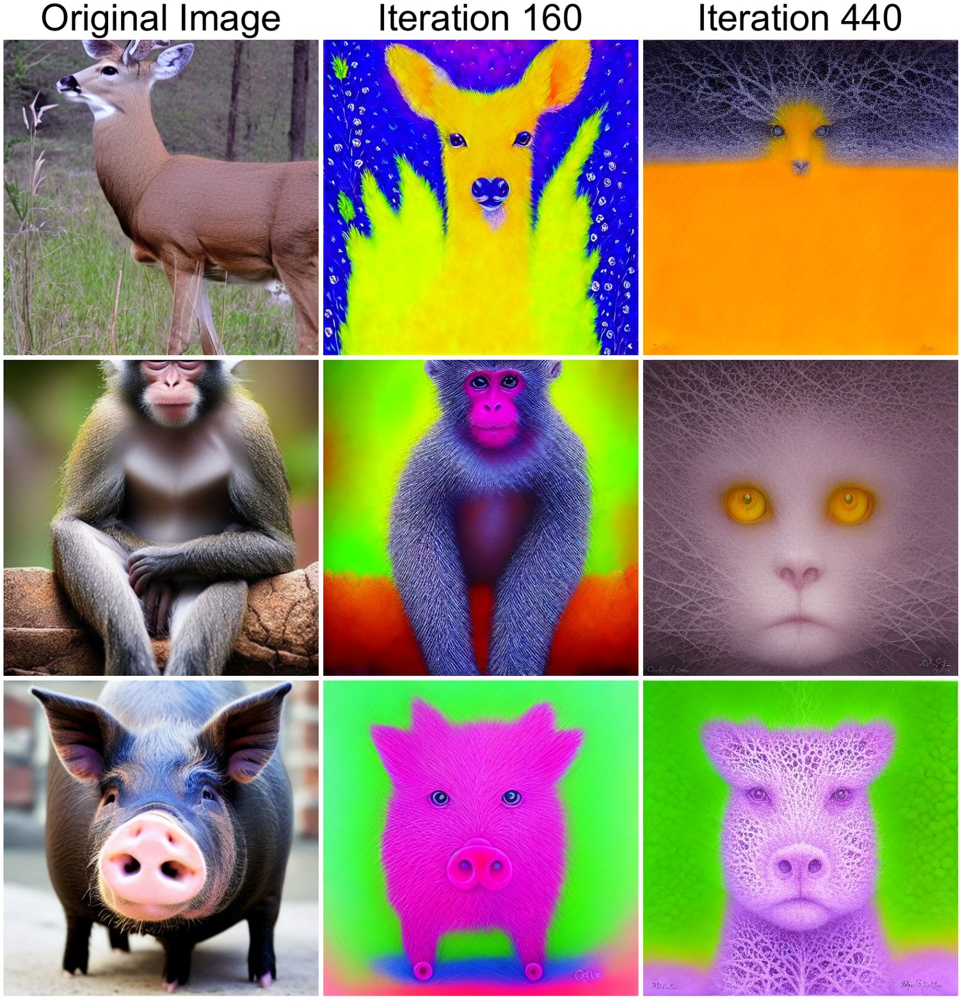
图 30：即便在美学分类器中使用很大的 dropout 率，奖励破解仍然发生（左）。引入鼓励多样性的奖励项则可能导致图像过度风格化（右）。
图 31：旋转反相关。
We also explored fine-tuning for symmetry or anti-symmetry properties. Here, we optimize for rotational anti-correlation, which encourages the diffusion model to generate images that are dissimilar to their rotations at degrees. Given an image and rotation operator , we formulate the objective as: . The results are shown in Figure 31: this objective leads to interesting black-and-white, stylized images.
我们还探索了面向对称或反对称性质的微调。这里优化旋转反相关，它鼓励扩散模型生成的图像与其旋转 度后的结果尽可能不同。给定图像 与旋转算子 ，我们把目标写成：。结果如图 31 所示：该目标产生了饶有趣味的黑白风格化图像。
We briefly explored using as a reward to improve image-text alignment. We found that optimization was successful in that CLIP scores improved, but that image quality degraded after many steps of training (see Figure 32).
我们简要探索了用 作为奖励来改善图文对齐。我们发现优化本身是成功的——CLIP 得分确有提升，但在训练很多步之后图像质量会退化（见图 32）。
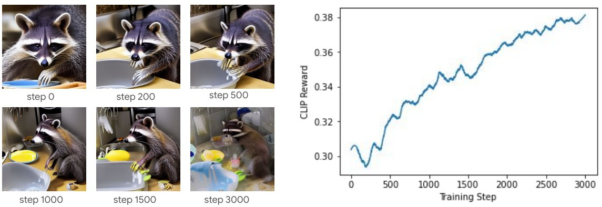
图 32：用 DRaFT 在提示词“a raccoon washing dishes”上针对 CLIP 奖励微调的定性示例（左）与训练曲线（右）。
Both HPSv2 and ImageReward are fine-tuned CLIP models, and for HPSv2 the annotators were specifically instructed to consider alignment to the prompt in their preference judgements. Therefore, they already capture some aspects of image alignment, and qualitatively we did observe alignment to increase in some cases when using these rewards (e.g. in the “a raccoon washing dishes” example in Figure 1). However, we think improving text alignment using a powerful image captioning model such as PaLI (Chen et al., 2023) as the reward would be an interesting future direction.
HPSv2 与 ImageReward 都是在 CLIP 基础上微调的模型，而且 HPSv2 的标注者被明确要求在偏好判断中考虑与提示词的对齐程度。因此它们已经捕捉了图像对齐的某些方面，我们在定性上也确实观察到使用这些奖励时对齐度有所提升（例如图 1 中“a raccoon washing dishes”的例子）。不过我们认为，用 PaLI（Chen et al., 2023）这类强大的图像描述模型作为奖励来改进文本对齐，会是一个有意思的未来方向。
The datasets on which large diffusion models are trained often contain NSFW content, which poses challenges for the deployment of safe models. Safety measures can be implemented at various stages of the text-to-image pipeline: 1) at the text prompt level (e.g., refusing NSFW words); 2) during the generative process (e.g., encouraging the model to output safe images); and 3) post-hoc elimination of NSFW images that have been generated. These approaches are complementary, and in practice we imagine that all three would be used in concert. Here, we focus on stage (2), by fine-tuning diffusion models using feedback from a pre-trained NSFW classifier. This approach is particularly useful for ambiguous prompts that may lead to either SFW or NSFW generations; for example, the prompt “swimsuit” can refer to images of people wearing swimsuits, or to just the article of clothing itself (the latter being more safe-for-work). We found that, before fine-tuning, the model mostly generated images of people wearing swimsuits, while after fine-tuning, the model instead generated images of lay-flat swimsuits.
大型扩散模型的训练数据集常含 NSFW 内容，这给安全模型的部署带来挑战。安全措施可以在文生图流水线的多个阶段实施：1）在文本提示词层面（例如拒绝 NSFW 词汇）；2）在生成过程中（例如引导模型输出安全图像）；3）事后剔除已生成的 NSFW 图像。这些方法互为补充，实践中我们设想三者会协同使用。这里我们聚焦第（2）阶段，用预训练 NSFW 分类器的反馈来微调扩散模型。该方法对那些可能生成 SFW 或 NSFW 结果的歧义提示词尤为有用；例如提示词“swimsuit”既可指穿着泳装的人，也可仅指这件衣物本身（后者更符合工作场所安全要求）。我们发现，微调前模型主要生成穿着泳装的人像，而微调后模型转而生成平铺摆放的泳装。
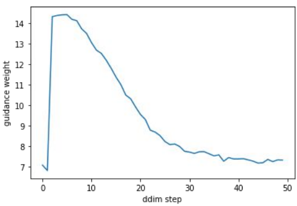
图 33：DRaFT 学到的引导调度
As DRaFT (without truncated backprop through time) computes gradients through the denoising process end-to-end, we can use DRaFT to optimize sampler hyperparameters as well as model weights.
由于 DRaFT（不做随时间截断反向传播时）端到端地计算贯穿去噪过程的梯度，我们也可以用它来优化采样器超参数以及模型权重。
Learning sampler hyperparameters is similar in spirit to Watson et al. (2022), except we obtain gradients from a reward model rather than using kernel inception distance. We explored learning two inputs to the sampler—the guidance weights and negative prompt embeddings—although it would be possible to extend this method to other hyperparameters such as the time schedule. In particular, we investigated:
学习采样器超参数在思想上与 Watson et al.（2022）相近，区别在于我们的梯度来自奖励模型，而非使用 kernel inception distance。我们探索了学习采样器的两个输入——引导权重与负提示词嵌入——当然该方法也可扩展到时间调度等其他超参数。具体地，我们研究了：
Guidance weights: We learn a separate guidance weight for each step of DDIM sampling. The learned schedule can be applied to samplers with different number of steps through linearly interpolating the schedule to stretch or compress it. We use a 50x larger learning rate for training guidance than the LoRA parameters because guidance weights have a large magnitude. An example learned guidance schedule is shown in Figure 33.
• 引导权重：我们为 DDIM 采样的每一步学习一个独立的引导权重 。学到的调度可通过线性插值拉伸或压缩，从而应用于步数不同的采样器。由于引导权重的量级很大，我们对其训练使用比 LoRA 参数大 50 倍的学习率。图 33 给出了一个学到的引导调度示例。
Negative prompt: We learn prompt-dependent text embeddings passed into the unconditional UNet used for classifier-free guidance. In particular, we parameterize the embedding as where is the text embeddings produced by the diffusion model’s text encoder.
• 负提示词：我们学习依赖提示词的文本嵌入，送入用于无分类器引导的无条件 UNet。具体地，我们把嵌入参数化为 ，其中 是扩散模型文本编码器产生的文本嵌入。
However, in practice, we found that this did not improve results much at large scale.
然而在实践中，我们发现这在大规模下并未带来多少改善。
Here we briefly discuss two gradient-based reward fine-tuning methods we explored, but which we found did not achieve strong results compared to DRaFT-1 and DRaFT-LV.
这里我们简要讨论两种我们探索过、但相对 DRaFT-1 与 DRaFT-LV 效果不佳的基于梯度的奖励微调方法。
A downside of DRaFT-LV is that it requires computing the reward function gradient an additional times. While this is relatively little overhead for the reward functions we used compared to the cost of image sampling, larger reward models could make this costly. We therefore experimented with a version of DRaFT-LV that only computes the reward gradient with respect to the input pixels once. Then it updates the gradient in the inner loop as . Unfortunately, we found this method to be unstable and ultimately not learn effectively, possibly because it relies on the assumption that , which may not be true in practice.
DRaFT-LV 的一个缺点是它需要额外计算 次奖励函数梯度。虽然对我们所用的奖励函数而言，相较于图像采样开销这部分相对较小，但更大的奖励模型会使之变得昂贵。因此我们试验了一种 DRaFT-LV 变体，它只对输入像素 计算一次奖励梯度，随后在内层循环中把梯度更新为 。遗憾的是，我们发现该方法不稳定，最终无法有效学习，可能是因为它依赖假设 ，而该假设在实践中未必成立。
Previous approaches applying RL to reward learning do not make use of sampling gradients. Here we discuss how Deterministic Policy Gradient (DPG; Silver et al. 2014; Lillicrap et al. 2016) offers a way of employing reward gradients within the RL framework.
此前的奖励学习 RL 方法并未利用采样梯度。这里我们讨论确定性策略梯度（DPG; Silver et al. 2014; Lillicrap et al. 2016）如何在 RL 框架内使用奖励梯度。
Similarly to Black et al. (2023), we can view DDIM sampling as applying a deterministic policy to a deterministic Markov decision process:
类似 Black et al.（2023），我们可以把 DDIM 采样视为对一个确定性马尔可夫决策过程施加确定性策略：
A state consists of the current latent, timestep, and prompt .
• 状态 由当前潜变量、时间步与提示词 构成。
The initial state draws , and sets .
• 初始状态 采样 ，并置 。
The policy is the learned denoiser:
• 策略即学习得到的去噪器：
The transition function performs a DDIM sampling step:
• 转移函数执行一次 DDIM 采样步：
The reward is if and 0 if otherwise.
• 奖励 在 时为 ，否则为 0。
DPG trains a critic and learns with the gradient update over sampled trajectories. The critic is trained to minimize the squared error between its prediction and the final return (in our case ).
DPG 训练一个评论家 ，并在采样轨迹上用梯度更新 学习 。评论家的训练目标是最小化其预测与最终回报（本文情形下为 ）之间的平方误差。
Many of our rewards make use of neural networks with pre-trained parameters , which we denote by writing . We suggest applying LoRA to parameterize the critic; we denote the LoRA-adapted parameters as . We then apply the critic by (1) executing the action on , (2) 1-step denoising the result to get a predicted clean image, and (3) applying the adapted reward model to the result. The reason for step (2) is to make the training of more efficient: we believe it is easier to adapt the reward model parameters to produce good expected return estimates for one-step-denoised inputs than it is for noisy inputs. Formally, we use the critic:
我们的许多奖励都用到带预训练参数 的神经网络，记作 。我们建议对 施加 LoRA 来参数化评论家，并把 LoRA 适配后的参数记为 。随后我们这样施加评论家：（1）在 上执行动作 ；（2）对结果做单步去噪得到预测的干净图像；（3）把适配后的奖励模型 作用于该结果。加入第（2）步是为了让 的训练更高效：我们认为让奖励模型参数针对单步去噪输入给出良好的期望回报估计，比针对含噪输入更容易。形式化地，我们使用如下评论家：
| (3) |
When computing gradients through , we do not backpropagate through step (2) into , to prevent it from interfering with the policy training.
在计算贯穿 的梯度时，我们不通过第（2）步反向传播到 ，以免干扰策略训练。
图 34：各奖励微调方法在 HPSv2 奖励上的训练效率。
The training efficiency of DPG compared with other methods is shown in Figure 34 (using the same experimental settings as in Figure 4). DPG outperforms vanilla DRaFT, but not our more-efficient variants. One challenge is that produces poor return estimates for large timesteps, which could perhaps be alleviated with a ReFL-style version that skips or rarely samples high timesteps for training the policy. There are many variants of DPG to explore, so we think that improving the performance of DPG for reward fine-tuning could be an interesting direction for future research; DPG is appealing because like vanilla DRaFT (but unlike ReFL and our DRaFT variants), it optimizes the full sampling process in an unbiased way.
图 34（采用与图 4 相同的实验设置）给出了 DPG 与其他方法的训练效率对比。DPG 优于原版 DRaFT，但不及我们更高效的变体。一个挑战在于 对大时间步给出的回报估计很差，或许可以用 ReFL 式的版本来缓解——在训练策略时跳过或极少采样高时间步。DPG 有许多变体值得探索，因此我们认为改进 DPG 在奖励微调中的表现是一个有意思的未来方向；DPG 的吸引力在于，与原版 DRaFT 一样（但不同于 ReFL 与我们的 DRaFT 变体），它以无偏的方式优化完整采样过程。
Denoising diffusion probabilistic models (DDPMs; Sohl-Dickstein et al. 2015; Song & Ermon 2019; Song et al. 2021b; Ho et al. 2020) are a class of generative models that have become the de-facto standard for most continuous data modalities, including images (Ramesh et al., 2021), videos (Ho et al., 2022; Singer et al., 2023), audio (Liu et al., 2023), and 3D models (Zeng et al., 2022; Poole et al., 2023; Gu et al., 2023). Text-to-image diffusion models, which generate images conditioned on text prompts, have become prominent tools with the advent of models such as GLIDE (Nichol et al., 2021), DALLE-2 (Ramesh et al., 2022), Imagen (Saharia et al., 2022; Ho et al., 2022), and Latent Diffusion (Rombach et al., 2022). In this paper we focus on fine-tuning text-to-image models, but DRaFT is general and could be applied to other diffusion models or fine-tuning tasks, and to different domains such as audio or video.
去噪扩散概率模型（DDPM; Sohl-Dickstein et al. 2015; Song & Ermon 2019; Song et al. 2021b; Ho et al. 2020）是一类生成模型，已成为图像（Ramesh et al., 2021）、视频（Ho et al., 2022; Singer et al., 2023）、音频（Liu et al., 2023）与三维模型（Zeng et al., 2022; Poole et al., 2023; Gu et al., 2023）等多数连续数据模态的事实标准。以文本提示词为条件生成图像的文生图扩散模型，随着 GLIDE（Nichol et al., 2021）、DALLE-2（Ramesh et al., 2022）、Imagen（Saharia et al., 2022; Ho et al., 2022）与 Latent Diffusion（Rombach et al., 2022）等模型的问世，已成为主流工具。本文聚焦文生图模型的微调，但 DRaFT 具有通用性，可应用于其他扩散模型或其他微调任务，也可拓展到音频、视频等不同领域。
Human preference learning trains models on judgements of which behaviors people prefer, rather than on human demonstrations directly (Knox & Stone, 2009; Akrour et al., 2011). This training is commonly done by learning a reward model reflecting human preferences and then learning a policy that maximizes the reward (Christiano et al., 2017; Ibarz et al., 2018). Preference learning methods such as reinforcement learning from human feedback (RLHF) have become widely used for fine-tuning large language models so they improve at summarization (Stiennon et al., 2020; Wu et al., 2021), instruction following (Ouyang et al., 2022), or general dialogue (Askell et al., 2021; Bai et al., 2022a; Glaese et al., 2022; Bai et al., 2022b). We apply DRaFT to optimize scores from existing preference models, such as PickScore (Kirstain et al., 2023) and Human Preference Score v2 (Wu et al., 2023a), which are trained on human judgements between pairs of images generated by diffusion models for the same prompt.
人类偏好学习以“人们更偏好哪种行为”的判断来训练模型，而不是直接在人类示范数据上训练（Knox & Stone, 2009; Akrour et al., 2011）。这类训练通常先学出一个反映人类偏好的奖励模型，再学一个最大化该奖励的策略（Christiano et al., 2017; Ibarz et al., 2018）。基于人类反馈的强化学习（RLHF）等偏好学习方法已被广泛用于微调大语言模型，使其在摘要（Stiennon et al., 2020; Wu et al., 2021）、指令遵循（Ouyang et al., 2022）或通用对话（Askell et al., 2021; Bai et al., 2022a; Glaese et al., 2022; Bai et al., 2022b）上表现更好。我们用 DRaFT 优化既有偏好模型的得分，例如 PickScore（Kirstain et al., 2023）与 Human Preference Score v2（Wu et al., 2023a），二者均基于人类对同一提示词下扩散模型生成的两张图像所做的判断训练而成。
Guidance steers the sampling process towards images that satisfy a desired objective by adding an auxiliary term to the score function. The canonical example is classifier guidance (Song et al., 2021b; Dhariwal & Nichol, 2021), which can turn an unconditional diffusion model into a class-conditional model by biasing the denoising process using gradients from a pre-trained classifier. Many other pre-trained models can also be used to provide guidance signals, including segmentation models, facial recognition models, and object detectors (Bansal et al., 2023). However, care must be taken when computing the guidance signal; naïvely, noisy examples obtained during the iterative refinement process may be out-of-distribution for the guidance model, leading to inaccurate gradients. Two approaches for mitigating this are (1) training a guidance model from scratch on noisy data (Dhariwal & Nichol, 2021) and (2) applying a pre-trained guidance model (which has seen only non-noisy data) to the one-step-denoised images obtained by removing the predicted noise at time (Li et al., 2022). However, both approaches have downsides: (1) precludes the use of off-the-shelf pre-trained guidance functions and (2) means the guidance is applied to out-of-distribution blurry images for high noise levels. DRaFT avoids these issues by backpropagating through sampling so the reward function is only applied to the fully denoised image.
引导通过在得分函数上附加一项辅助项，把采样过程导向满足期望目标的图像。典范例子是分类器引导（Song et al., 2021b; Dhariwal & Nichol, 2021），它利用预训练分类器的梯度偏置去噪过程，可把无条件扩散模型转化为类别条件模型。许多其他预训练模型也可提供引导信号，包括分割模型、人脸识别模型与目标检测器（Bansal et al., 2023）。但计算引导信号时须谨慎：朴素做法下，迭代精修过程中得到的含噪样本对引导模型而言可能属于分布外，导致梯度不准。缓解该问题有两种途径：（1）在含噪数据上从零训练引导模型（Dhariwal & Nichol, 2021）；（2）把预训练引导模型（只见过无噪数据）作用于去除时刻 预测噪声后得到的一步去噪图像（Li et al., 2022）。但两种做法都有缺陷：（1）排除了直接复用现成预训练引导函数的可能；（2）意味着在高噪声水平下把引导施加于分布外的模糊图像。DRaFT 通过贯穿采样反向传播，使奖励函数只作用于完全去噪后的图像，从而规避了这些问题。
Similarly to our method, Watson et al. (2022) backpropagate through sampling using the reparameterization trick and gradient checkpointing. They learn parametric few-step samplers that aim to reduce the inference cost while maintaining perceptual image quality, using a differentiable image quality score. Fan & Lee (2023) also propose an approach to speed up sampling: they consider doing this using gradients by backpropagating through diffusion sampling, but due to memory and exploding/vanishing gradient concerns, they focus on an RL-based approach. Both Fan & Lee (2023) and Watson et al. (2022) aim to improve sampling speed, rather than optimize arbitrary differentiable rewards, which is our focus. Like DRaFT, Direct Optimization of Diffusion Latents (DOODL; Wallace et al. 2023) uses backpropagation through sampling to improve image generation with respect to differentiable objectives. Rather than optimizing model parameters, DOODL optimizes the initial noise sample . Although DOODL does not require a training phase, it is much slower at inference time because the optimization must be redone for each prompt and metric. In contrast, after finetuning with DRaFT, sampling has the same cost as a standard diffusion model. Furthermore, the latent optimization methods do not support the compositionality and interpolation properties that we can achieve with different sets of LoRA parameters tuned for different objectives.
与我们的方法类似，Watson et al.（2022）利用重参数化技巧与梯度检查点贯穿采样做反向传播。他们用可微的图像质量得分学习参数化的少步采样器，旨在降低推理开销的同时保持感知图像质量。Fan & Lee（2023）也提出了一种加速采样的方法：他们考虑过用梯度通过扩散采样反向传播来实现，但受制于显存与梯度爆炸／消失的顾虑，最终聚焦于基于 RL 的方案。Fan & Lee（2023）与 Watson et al.（2022）的目标都是提升采样速度，而非优化任意可微奖励——后者才是我们的关注点。与 DRaFT 类似，Direct Optimization of Diffusion Latents（DOODL; Wallace et al. 2023）利用贯穿采样的反向传播，针对可微目标改进图像生成；但 DOODL 优化的是初始噪声样本 ，而非模型参数。尽管 DOODL 不需要训练阶段，它在推理时慢得多，因为每条提示词与每个指标都要重新做一遍优化。相比之下，用 DRaFT 微调之后，采样开销与标准扩散模型相同。此外，潜变量优化方法不支持我们用针对不同目标调优的不同 LoRA 参数集所实现的组合性与插值性质。
Outside of image generation, Wang et al. (2023a) train diffusion model policies for reinforcement learning by backpropagating the Q-value function through sampling.
在图像生成之外，Wang et al.（2023a）通过把 Q 值函数贯穿采样反向传播，训练用于强化学习的扩散模型策略。
Lee et al. (2023) and Wu et al. (2023b) use supervised approaches to fine-tune diffusion models on rewards. These methods generate images with the pre-trained model and then fine-tune on the images while weighting examples according to the reward function or discarding low-reward examples. Unlike DRaFT or RL methods, the model is not trained online on examples generated by the current policy. However, Dong et al. (2023) use an online version of this approach where examples are re-generated over multiple rounds of training, which can be viewed as a simple kind of reinforcement learning.
Lee et al.（2023）与 Wu et al.（2023b）用有监督方式在奖励上微调扩散模型。这些方法先用预训练模型生成图像，再在这些图像上微调，并依奖励函数对样本加权或丢弃低奖励样本。与 DRaFT 或 RL 方法不同，模型并非在由当前策略生成的样本上在线训练。不过 Dong et al.（2023）使用了该方法的在线版本，在多轮训练中反复重新生成样本，可视为一种简单的强化学习。
Fan & Lee (2023) interpret the denoising process as a multi-step decision-making task and use policy gradient algorithms to fine-tune diffusion samplers. Building on it, Black et al. (2023) and Fan et al. (2023) use policy gradient algorithms to fine-tune diffusion models for arbitrary black-box objectives. Rather than optimizing model parameters, Hao et al. (2022) apply RL to improve the input prompts. RL approaches are flexible because they do not require differentiable rewards. However, in practice many reward functions are differentiable, or can be re-implemented in a differentiable way, and thus analytic gradients are often available. In such cases, using reinforcement learning discards useful information, leading to inefficient optimization.
Fan & Lee（2023）把去噪过程解释为多步决策任务，并用策略梯度算法微调扩散采样器。在此基础上，Black et al.（2023）与 Fan et al.（2023）用策略梯度算法针对任意黑盒目标微调扩散模型。Hao et al.（2022）则把 RL 用于改进输入提示词，而非优化模型参数。RL 方法的优势在于无需奖励可微。但实际上许多奖励函数本身可微，或以可微方式重新实现，解析梯度往往唾手可得。在这种情况下使用强化学习会丢弃有用信息，导致优化低效。
Reward Feedback Learning (ReFL; Xu et al. 2023) evaluates the reward on the one-step predicted clean image, from a randomly-chosen step along the denoising trajectory, and backpropagates through the one-step prediction w.r.t. the diffusion model parameters. DRaFT- is conceptually simpler than ReFL, as it only differentiates through the last few steps (e.g., ) of sampling, where is deterministic; in (Xu et al., 2023), the authors randomly choose an iteration between a min and max step of the sampling chain (which incurs more hyperparameters) from which to predict the clean image. Also, because DRaFT runs the full sampling chain, our reward functions are always evaluated on final generations. In contrast, ReFL applies the rewards to one-step denoised latents in the sampling trajectory, similar to the use of one-step denoising in guidance. Furthermore, DRaFT-LV is substantially more efficient than ReFL, speeding up training by approximately by reducing the variance of the single-denoising-step gradient estimates.
奖励反馈学习（ReFL; Xu et al. 2023）在去噪轨迹上随机选取某一步 所对应的一步预测干净图像 上评估奖励，并把梯度经该一步预测反向传播到扩散模型参数。DRaFT- 在概念上比 ReFL 更简单，因为它只对采样的最后几步（例如 ）求导，此处 是确定性的；而 Xu et al.（2023）在采样链的最小步与最大步之间随机选取迭代（因而引入更多超参数）来预测干净图像。此外，由于 DRaFT 跑完整个采样链，我们的奖励函数始终在最终生成结果上评估；相比之下，ReFL 把奖励施加于采样轨迹中一步去噪的潜变量，类似于引导中单步去噪的用法。再者，DRaFT-LV 通过降低单去噪步梯度估计的方差，训练速度比 ReFL 快约 ，效率明显更高。
Here, we show uncurated samples from models fine-tuned with DRaFT for different reward functions: Human Preference Score v2 (Figure 35), PickScore (Figure 36), and a combined reward (Figure 37). The first two are overfit to the reward functions, which decreases diversity and photorealism. In the third, we mitigate overfitting through LoRA scaling.
这里给出用 DRaFT 针对不同奖励函数微调的模型所生成的未筛选样本：Human Preference Score v2（图 35）、PickScore（图 36）与组合奖励（图 37）。前两者对奖励函数过拟合，导致多样性与真实感下降；第三者我们通过 LoRA 缩放缓解了过拟合。
图 35：用 DRaFT-1 针对 HPSv2 奖励（Wu et al., 2023a）微调的 Stable Diffusion 生成的未筛选样本。
图 36：用 DRaFT-1 针对 PickScore 奖励（Kirstain et al., 2023）微调的 Stable Diffusion 生成的未筛选样本。
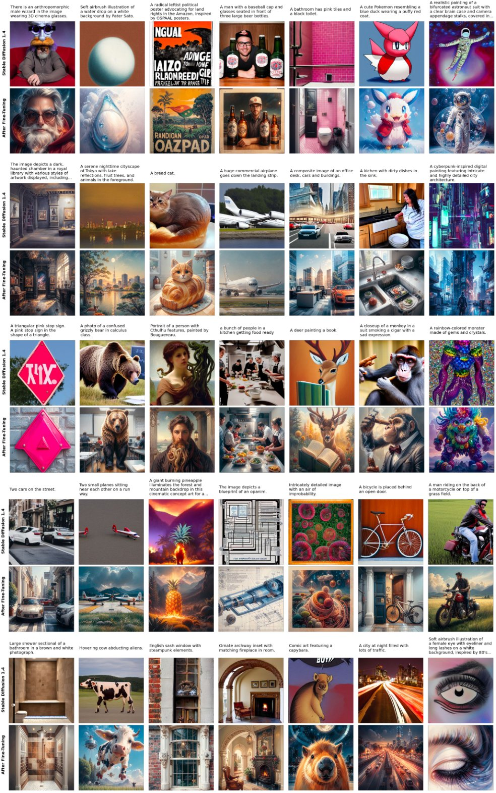
图 37：预训练 Stable Diffusion 1.4 与 DRaFT 微调后 Stable Diffusion 的未筛选样本对比。我们在组合奖励 上使用 DRaFT-LV。训练后把 LoRA 权重缩小为 0.75 倍以缓解奖励过拟合。提示词取自 HPSv2 基准。